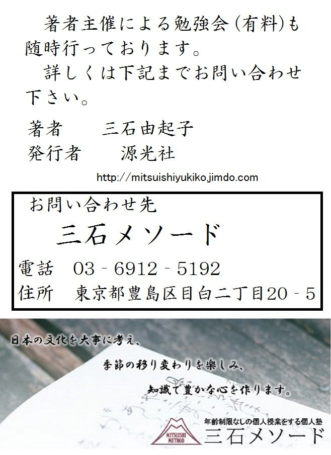

| これで読破！ 蜻蛉日記 上 | |
| Mitsuishi Yukiko | |
| genkosha (2014) | |
この『蜻蛉日記』は、元学習院大学教授・木村雅則（大正十五年東京生まれ）の解釈と解説を数箇所に含めている。木村雅則は、平安時代の日記と物語文学の権威であったが、特に『蜻蛉日記』はライフワークとして研究を続けて来た。また、元九州大学教授で、国文学研究資料館長の今西祐一郎（昭和二十一年生まれ）の近年の研究と本人からの取材を取り入れている。今西祐一郎も、『蜻蛉日記』の専門家であり、この日記には兼家の和歌が多く取り入れられていることから、『兼家歌集』の宣伝のために夫の協力を得て書かれたという説を唱えている。本文は、底本の不備、不審箇所の訂正を、今西祐一郎が研究と私見を取り入れて作成した校訂本文を使用した。木村の講義を引き、今西への取材も取り入れている。現代文に文章化するに当たっては、今西の解釈を用い、木村の解説には三石の割愛や付加もあることをお断りしておく。
まずは木村雅則の講義を引く。
「『蜻蛉日記』の文章は、大体、どのテキストを見ても同じだが、詳細に比べれば細かい違いがある。現在残っている写本は、それぞれに原本から徐々に崩れて間違った箇所や、判読できない箇所を抱えていて、修正して読まざるを得ない。その修正の仕方、本文制定の仕方は、研究者によってまちまちであることから、テキストには細かい相違が生じている。その違いの中で、重要だと思われる箇所は解説する。
『蜻蛉日記』は今から千年程前、平安時代の中頃で『枕草子』や『源氏物語』よりも二、三十年前に一人の女性の手によって書かれた。当時の女性は、最上流の者を除いてはほとんど名前が分からない。宮仕えをすれば、その時の呼び名、清少納言や和泉式部という名で呼ばれる。宮仕えをしていなければ、誰々の女、誰々の母と呼ばれる。『蜻蛉日記』の作者は、右大将道綱の母、藤原道綱母、簡単に道綱母と呼ばれている。この日記は、彼女がその人生の最も重要な二十一年間、藤原兼家との結婚生活を中心に書かれたものである。
彼女の父は、藤原倫寧と言い、主流から外れた藤原氏であった。藤原氏に排斥され、抑えられた人々と同様に、主流の藤原氏とは格差があった。地方官の経歴を多く持つようになって、受領階層を形成するに至った家柄であった。
平安時代に入った九世紀、藤原冬嗣とその子の良房から、藤原氏は次第に権勢を強めて行く。殊に良房は従一位となり、人臣にして初めて太政大臣になった。良房の養子・基経は、良房の兄・長良の子であったが、継父に次いで従一位太政大臣になったばかりでなく、宇多天皇の御代では関白となった。そうして基経の子孫が、摂政関白の座を次々に踏襲する藤原北家の主流となる。基経の実父・長良は、生前は権中納言で終わる。良房の養子になった基経だけが特別に出世をしたが、他の兄弟はそうではなかった。その基経の弟・高経は、蔵人頭で正四位下で止まった。この高経の孫に当たるのが、『蜻蛉日記』の著者の父親・藤原倫寧である。
倫寧も正四位下・伊勢守がその極官であった。中流階級の官吏であり、中央と地方を行き来した受領層として身分が定まった。十世紀には社会も固定化し、身分制度も確立して閉塞感を強めて行く。その中で、倫寧の社会的な立場は、特定の場所に閉ざされていたのである。『蜻蛉日記』の中で、作者はこの父をしばしば「県ありき」「県ありきのところ」と表現しているのは、地方官暮らし、地方官勤めのことである。
倫寧に限らず、中流官吏の中にはそのように固定された立場に対して、不満を持つ者もいた。実際には、立場を守り、保身を考えて現実に妥協し、時にはその有利な特権を敢えて選んで入りもしたが、心中にはどこか満たされぬ、やり切れぬ気持ちがあった。身分が沈み、運命が定まった境遇への慨嘆があった。中流層の人達が皆そうだった訳ではなく、そうした不満を持つ者はかなり特別だったとも言えるが、倫寧はそうだった。文章生（大学寮で文章道を専攻した者）の出身で、学問をして一通りの知識を身に付けていた。当時の学問は、儒学に基づく理想主義である。現実の社会体系との間には大きなギャップがあった。それを強く感じている上に、時代の閉塞感、自分の立場の不満足が混ざって、現実を批判的認識で捉えるようになる。実際に現実を変える事は出来ないが、現実と対決する人生観は醸成されたのである。世の中を巧みに渡ろうというだけでは収まらない現実批判の精神をうちに抱えて、ある理念に基づく世界観を形作っていた。
詩文の才に長けた人々は、風刺の文学を拵え、また仮名文の表現で自慰的、享楽的な物語を制作した。先行する『宇津保物語』などは、おそらくそうした官人の手によって作られたものである。源順がその作者に擬せられているが、順などはその典型であり、本当に学問のある官人であった。それに比べると倫寧は、非常に穏当で常識的であり、それほど鋭く現実を見つめることもなかったろうが、源順などと一緒に申文（＝朝廷に対する意見具申の文章）を拵えており、漢学の教養があった。
このような父・倫寧の世界観は、その娘の精神に深い影響を与えたと思われる。平安時代の女流文学の担い手達は、しばしばこの文人（文章生出身の者）の父を持って、受領階級、中流階層に属している。和泉式部、紫式部、清少納言、全てそうであった。道綱母も同様で、その文学の原点は、この父娘の精神的な繋がりに求められる。作者は『蜻蛉日記』の中で、父を「県ありき」と呼ぶ他に、「わがたのもしき人」「ひとりをたのむたのもし人」「いたはしと思ふべきひと（自分を非常に可哀想だと思ってくれる人）」「あしともよしともあらんをいなむまじき人（悪い事も良い事も言う事については反対が出来ない人）」と述べている。絶対的な信頼を父に抱いていたのである。
一般的に娘にはファーザーコンプレックスがあるのだろうが、それ以上にこの時代の中流の父娘の間には、娘の生き方を決定付け、その人生観の本質に関わる繋がり、文学を生み出す必然性に繋がる関わりがあったのではないか。当時、女が社会に出ることは、宮仕え以外にほとんどなかった。女は父、ならびに男の兄弟に接して男性を見る以外にほとんど男を見る機会がなかった。娘の父親に寄せる心の傾きは非常に強かった。まして日常の生活では父親は娘と同居しないのである。当時の結婚形態は通い婚で、母親の許に父親が通い、母親はそれを迎えるものだった。ちょうどこの『蜻蛉日記』が書かれる時分にはかなり同居もなされて、婚姻の形態も変化する社会史的にも重要な時期に当たるが、父親が子供と密着した生活をしないのが原則的、本質的な日常であった。父親は完全な意味では娘の家族ではない。その父親が深い愛情で娘に接する。たとえ父親の母親に対する愛情が変化したとしても娘への愛情は不変であった。娘はある意味では家族でない父親に何の疑念もなく寄りかかっていた。そういう精神状態でありながら、日常生活を共にしない事がますます父親を理想の男性像に仕立てて行った。その関係の中では、父親の考え方、思考方法が娘の心に非常に純粋に染み通って行く。道綱母の場合、『蜻蛉日記』が夫婦の生活を中心に書かれていることを思うと、夫・兼家への愛は、父親に対する愛情との違いに焦点があったろうと考えられる。
作者の母親の素性はよく分からない。作者には理能（あるいはまさよし）、長能という兄弟がいた。長能は歌人としても有名で、母親は源認の娘である。理能の母親は藤原春道の娘である。作者・道綱母は、このどちらかの兄弟と同母だと考えられるが詳細は分からない。理能と同腹で春道の娘との説が強いが絶対ではない。『蜻蛉日記』によれば、この母は「古代なる人（非常にふるめかしい人）」で、昔知識の古風な女性であった。母に対する意識は、父へのものとはかなり違っていた。母は生活を共有し、日常生活の中で結び付いていて、普通の母子であった。愚痴をこぼして安心し、話のできる相手だった。父母ともに物心両面で頼りになる存在であったが、父親は精神的な支柱であり、母親は日常的な親和者であったろう。
作者の夫・藤原兼家は、『蜻蛉日記』の中心人物である。良房の養子・基経には忠平という子があり、その息子・師輔の三男がこの兼家である。基経の孫であるから藤原氏の主流、摂関家の一人として生まれたのであった。作者・道綱母と結婚した時には、父・師輔は右大臣であり、兼家自身は右兵衛介という役であった。この結婚には大きな身分差があったのである。それは、この結婚が成立した時点で、作者の一族に将来への大きな期待を与えるものだった。また作者には期待と同時に計り知れない不安を持たせるものだったろう。それは、後に苦労になっていくが、序文には「天下の人のしなたかき（この上なく身分の高い人）」という言葉がある。この上なく身分の高い人との結婚がどんなものになるのか、という期待と不安であった。
兼家は政界で活躍する。その官位は紆余曲折を経るが、結局は蔵人頭、左中将、中納言、右大将、大納言ときわめて順調な出世の道を辿るのである。右大将、大納言という所で『蜻蛉日記』の記事は終わる。だが、その後にはさらに進んで摂政、太政大臣の世に立つ人物であった。現実の社会が、男の手だけで律せられていく中で作者にあるのは、結婚生活という個人の生活だけだったのである。
父・倫寧も、作者の母とは同居しなかったが、まして夫・兼家は同居をしない。これは、結婚の形態としては原則的な形で、自ずから一夫多妻を意味するのである。作者が結婚した天暦八年には、兼家には既に時姫（＝藤原中正の娘）という妻があり、長男・道隆も生まれていた。その後、時姫との間には、道兼、道長が生まれる。また女子では超子、詮子という女御になる娘達が生まれるのであった。当然、時姫は、兼家の妻達の中では最も大切な妻となった。兼家の妻として『蜻蛉日記』に登場するのは、時姫の他に「町の小路の女」「近江（＝藤原国章の娘）」「源兼忠の女」などがあるが、『蜻蛉日記』以後にも「大夫」や「中将の御息所」と呼ばれる女性が存在した事が分かっている。一夫多妻の社会での常識であった。妻達の中には身分的に必ずしも正式な妻と認められない者も存在する。侍女でありながら妻の役目を果たす召人もある。また、正式な妻達の間でも勢力の上下ができ、北の方と見られる主権を持つ人がそれらの地位を自然に決定していくこともあった。だが、召人は別として、基本的には妻達の立場は平等であった。「本つ妻」という言葉は、「本妻」ではなく「以前からの妻」という意味である。道綱母にとって時姫は本つ妻であった。兼家が道綱母の次に通った「町の小路の女」にとっては、時姫と道綱母は「本つ妻ども」であった。『大和物語』には「本つ妻ども」という複数がある。「嫡妻」も「正妻」ではなく、「たまたま同居するようになった妻」という言葉である。時姫は、「本つ妻」であり、後には兼家と同居して「嫡妻」となった。これは、たまたまの成り行きでそうなっただけのことであり、封建社会の正室の概念とは違うのである。時姫は、状況でそうなったが、作者・道綱母にもそうなれる可能性は充分にあった。だが、社会状況がどんどん時姫の方に傾いたこと、大勢の子供達を持つに至った時姫と、道綱一人しか生まなかった作者との差が非常に大きくなっていったのである。
当時の結婚形態においては、一夫多妻は当然で、時姫がすでに妻として存在していた事実は、作者の結婚の支障にはならなかった。時姫の存在は、作者の結婚の幸せとは無関係だったのである。だが、現実の一夫多妻という制度を否応なく認めながら、夫の愛情を独占したいという願望との矛盾に作者は苦しむことになった。その矛盾に気付かずに苦しみだけを強く感じて行くのである。その果てしない矛盾が描かれるのが『蜻蛉日記』であった。
結婚の実際の形態は、「通う」「住む」「据う（据える）」である。最も一般的なのが「通う」であり、妻問婚の形であった。男が女の許へ通うこの形態は、夫婦間の愛情の濃淡や、その継続が、ほとんど男の一方的な意向に任されていた。男はきわめて自由だが、女は男の訪れを待つしかなかった。だが、これは後に現われる「大勢の女を持つのが男の力量だ」とされた封建時代以降の男女の関係とは大いに違うものであった。
今日の結婚でも、男女は結婚でお互いを縛り合い、またそれを心の拠り所や精神の憩いにしている。お互いが縛り合うデメリットと裏腹に生まれる安心感を持っている。だが、この当時の結婚にはそれがなかった。男には結婚を離れたところに人生の別の立場があった。律令制度の中での政治的な立場こそが、男の人生の支柱であった。男にとっては、結婚生活は何の精神的な支えにもならなかったのである。
女は、結婚とともに精神的な支柱を夫に求めた。だが、今日の結婚がもたらすような安心感や、心の拠り所は得られなかった。夫に縛られることによって、その見返りとして、立場を安定させる事ができなかったのである。ここに当時の女性の自由と不安があった。」
『蜻蛉日記』は、それを描く。道綱母の結婚の根源的な矛盾を通して、人生の真実を描き出そうとした作品である。真実を書いて行くうちに見出されてたものは何であったのか。それがこれを読む意義である。序文と呼べる最初の部分から読む。『蜻蛉日記』は上中下の三巻に分けられているが、その冒頭にこれが置かれて、執筆の動機が記されている。
かくありし時すぎて世中にいとものはかなく、とにもかくにもつかで世にふる人ありけり。
かたちとても人にも似ず、こゝろたましひもあるにもあらで、かうものゝ要にもあらであるもことわりと思ひつゝ、たゞ臥し起きあかしくらすまゝに世中におほかた古物語のはしなどを見れば、世におほかるそらごとだにあり、人にもあらぬ身のうへまで書き日記してめづらしきさまにもありなん、天下の人の品たかきやと問はんためしにもせよかし、とおぼゆるも、過ぎにし年月ごろのこともおぼつかなかりければ、さてもありぬべきことなんおほかりける。
このような年月が過ぎていき、夫婦の仲はたいそう儚く、どうにもこうにもはっきりしないまま、何とも頼りなく生きている一人の女があった。
この人は、容貌といっても人並みの美しさしかなく、思慮分別にしてからが、さしてある方とも言えぬので、何の役に立つこともなく生きているのも道理だと思いながら毎日を過ごしていた。それにつけても、世間でありふれた昔物語などを読めば、大体が勝手な作りごとばかりである。それなら、いっそこの人の身の上を日記として書いてみたら、珍しくもあろうと思う。身分の高い男と結婚した女の生活がどんなものか、その一端を世間は知りたくもあろう、などと思ってもみる。だが遠く過ぎ去った年月の事はどうも記憶がはっきりせず、中には書かなくても良いようなことを多く書くことになった。
「かくありし時すぎて」は、非常に挑戦的な書き出しである。読者には「かくありし」に全く思いが至らないはずである。だが、それが結婚生活の幸せの脆さや、悲しみの普遍的なもので、女性に共通の諦観であることに読者は瞬時に気づいて同感するのである。作者を全く知らないはずの読者が、まるで自分の過去を見るかのような「良く知った世界」に引き込まれていく。文字の上では儚げな「とにもかくにもつかで世にふる人ありけり。」という登場人物の紹介は、現実的な迫力をもって共感を呼んでいる。
『蜻蛉日記』は、上、中、下巻ともに「かく」で筆を起こしている。『古今集』には「かくしつつとにもかくにもながらへて 君が八千代にあふよしもがな」があり、その上の句を意識したものかもしれない。著者自身を「人ありけり」人がいたそうだ、と三人称化して、まるで物語だと言わんばかりである。「かたちとても人にも似ず、こゝろたましひもあるにもあらで」容貌も心も、十人並だと書くのは、謙遜でも卑下でもない。著者の個性を外して、読者の心を直ちに著者と重ねる企みである。容貌や実務能力もそこそこの無価値な人間だという設定は、一夫多妻制の中で、現実に我が身の置き所を不安に感じていた多くの女性を飛びつかせるに充分だったろう。さらに「天下の人の品たかき」身分の高い男との結婚生活を覗かせようというのだから、読者には著者をすっかり受けとめる準備ができたことだろう。
さて、あはつけかりしすきごとどものそれはそれとして、柏木の木高きわたりより、かく言はせんと思ふことありけり。例の人は案内するたより、もしはなま女などして言はすることこそあれ、これは親とおぼしき人にたはぶれにもまめやかにもほのめかししに、「便なきこと」と言ひつるをも知らず顔に、馬にはひ乗りたる人してうちたゝかす。「誰」など言はするにはおぼつかなからず、さわいだれば、もてわづらひ取り入れて持てさわぐ。見れば紙などもれいのやうにもあらず、いたらぬところなしと聞きふるしたる手も、あらじとおぼゆるまで悪しければ、いとぞあやしき。ありけることは
音にのみ聞けばかなしなほととぎす
ことかたらはんとおもふこころあり
とばかりぞある。「いかにかへりごとはすべくやある」などさだむるほどに、古代なる人ありて、「なほ」と、かしこまりて書かすれば
かたらはん人なきさとにほととぎす
かひなかるべき声なふるしそ
さて、あっけなく過ぎた若い頃の恋愛沙汰は、それはそれとして、若い貴公子であった兼家が求婚の意を伝えようとして来た。普通の男ならば、適当な女房などにしかるべき手順を求めて仲介させるのだが、この兼家は親（＝倫寧）に冗談とも真剣ともつかない態度で仄めかして来た。とんでもないとお断りしていたのに、全くお構いなしに馬に乗った使者を寄越して門を叩かせた。今更どなた様からだと言う事もなく騒がしくなって、手紙を受け取った女房達もどうしようかと使者とともに騒ぐのであった。その手紙を見ると、紙なども懸想文を書くのに用いられるような物ではなかった。以前から非のうち所がないと聞いていた筆跡も、これはなかろうと思うほどに無造作なものだったので、何とも妙に面白くないと思ったものだ。そこに書かれていたのは、
「 音にのみ聞けばかなしなほととぎす
ことかたらはんとおもふこころあり
（お噂を聞くだけでは辛い。お話ししたいと思います）」
と、ただ「時鳥」に譬えてあるだけの面白くもない文であった。
こんなものに、どう返事をすればいいかと考えていると、昔風の母が、やはりお返事しなければと、畏まって書かせたので、
「 かたらはん人なきさとにほととぎす
かひなかるべき声なふるしそ
（お話し相手になる者はここには誰もおりません。無駄なお声はおかけになりませんように）」
と、返事をする。
本文冒頭の「あはつけかりし」は、今西の改訂である。写本は「あのけかりし」であり、木村は「あふなかりし」としているが、木村自身が「「あふなかりし」は、全く何の事か分からない。」と述べている。他にも「あはせかりし」「こうなかりし」などと様々に言われている。いずれにしても若い頃の恋愛沙汰の形容である。「柏木の木高きわたり」の「柏木」は、兵衛府の官人の異名である。兵衛の督、佐、尉の別名である。天暦八年（西暦９５４年）のその時、兼家は兵衛佐であった。上流貴族は若い頃に右兵衛佐という役に就く。「柏木」には若い貴公子のイメージがある。
「おやとおぼしき人」は、木村は「倫寧をあたかも物語の第三者であるように表現した」と解説するが、今西は、身内を卑下する婉曲表現だと断じている。「古代なる人」の「古代」は「こだい」でも「こたい」でも良い。著者の母を指している。
兼家の求婚は天暦八年で、兼家は二十六歳、作者の年齢は大体十九歳か二十歳であろう。求婚を受けた作者のときめきが「柏木の木高きわたり」という表現に表われている。だが、求婚をそのまま承諾するのは当時の礼儀ではなかった。形の上では拒否した「切り返し」の和歌を返すことが、恋愛贈答歌の常套である。求婚に対して返歌したという事実が、それに応じようとする意志を伝えるのである。この時の兼家の手紙が、情趣のない酷い物だったとある。木村はそれを「兼家の無造作な性格を充分に承知した後の作者の筆によるものなので、事実よりも強調されていると思われる。」と述べているが、ご存知の通り、こういう場合の女性の記憶には間違いはないのである。木村は「だからと言って作り事ではない。喜びを含めて作者の気持ちが複雑であったのに対して、兼家は、物事を速やかに処理したい性格であった。作者の人生で本質的な要の部分に夫との隔たりがあった。」と解説しているが、夫との齟齬は、この当初の一事が万事であったことが偲ばれて面白い。
筆者の「かたらはん」の歌は「かひなかるべき」の「かひ」に「効」と「卵」を掛けたもので、「卵」は「ほととぎす」の縁語である。
これをはじめにてまた〳〵もおこすれど返りごともせざりければ又、
おぼつかな音なき滝の水なれや
ゆくへもしらぬ瀬をぞたづぬる
これを「いまこれより」と言ひたれば、しれたるやうなりや、かくぞある。
ひとしれずいまや〳〵と待つほどに
かへりこぬこそわびしかりけれ
とありければ、例の人「かしこし。をさ〳〵しきやうにも聞こえんこそよからめ」とて、さるべき人して、あるべきに書かせてやりつ。それをしもまめやかにうちよろこびて繁うかよはす。
また添へたる文みれば、
浜千鳥あともなぎさにふみ見ぬは
われを越す波うちや消つらん
このたびも例のまめやかなる返りごとする人あれば、まぎらはしつ。又もあり。「まめやかなるやうにてあるも、いと思ふやうなれど、このたびさへなうは、いとつらうもあるべきかな」などまめ文の端に書きて添へたり。
いづれともわかぬ心は添へたれど
こたびはさきに見ぬ人のがり
とあれど例のまぎらはしつ。かゝればまめなることにて月日はすぐしつ。
この贈答歌に続いて兼家からまた歌があったが、返歌もしなかったので、
「 おぼつかな音なき滝の水なれや
ゆくへもしらぬ瀬をぞたづぬる
（どうなっているのだ。返事もくれぬ音無しの滝のようなあなたとの逢瀬を探し求めている）」
と、また歌が来た。
この歌に対して「今こちらから御返事します」と言っておいたのは、馬鹿のようだった。また、すぐにこんな歌が来た。
「 ひとしれずいまや〳〵と待つほどに
かへりこぬこそわびしかりけれ
（使いの帰りを今か今かと待っているのに、返事がないのは侘びしいことよ）」
例によって昔風の母が、しっかりした大人らしい返事をした方が良いと言って、しかるべき侍女にしかるべく書かせて送る。それをも真面目に喜んで、頻繁に歌が届く。次に来た兼家からの歌は、こうであった。
「 浜千鳥あともなぎさにふみ見ぬは
われを越す波うちや消つらん
（浜千鳥の足跡も渚に残っていないのは、波が消したのか、あるいは末の松山を越えた波があるのか）」
手紙の返事がないのは、そちらに恋人でも出来て、自分を無視するからなのかという意味であった。「あと」に「足跡」と「筆跡」、「なぎさ」に「渚」と「無き」、「ふみ」に「踏み」と「文」が掛けられている。『古今集』東歌の「君をおきてあだし心を我が持たば 末の松山波も越えなむ」を踏まえたものである。兼家は、筆者に別の愛人がいるかのように詠んで、結婚を急かしたのであった。
この歌にも、いつもの儀礼的な代詠をする人があって、適当に紛らわせていたのだが、兼家からまた手紙がある。手紙の端には「儀礼的だとしても、思ってくれてはいるようだが、今回も代詠であるのは辛いことだ」と、書いてある。そうして、
「 いづれともわかぬ心は添へたれど
こたびはさきに見ぬ人のがり
（直筆でも代筆でも心は有難いが、今度は以前に筆跡を拝見したことのない方の返事が頂きたい）」
とあったが、いつものように紛らわした。
こんなふうに儀礼的なことだけで月日を過ごしていた。
秋つかたになりにけり。添へたる文に、「心さかしらづいたるやうに見えつる憂さになん、念じつれど、いかなるにかあらん、
鹿の音もきこえぬ里に住みながら
あやしくあはぬ目をもみるかな」
とある返りごと、
「 高砂のをのへわたりに住まふとも
しかさめぬべき目とはきかぬを
げにあやしのことや」とばかりなん。
又、ほどへて、
逢坂の関やなになり近けれど
越えわびぬれば嘆きてぞふる
かへし、
越えわぶる逢坂よりも音にきく
勿来をかたき関としらなん
など言ふ。
秋の頃になった。添えられた手紙に、
「強情に見える疎ましさに、我慢してはいるが、どうなることであろうか。
鹿の音もきこえぬ里に住みながら
あやしくあはぬ目をもみるかな
（山里とは違い鹿の声も聞こえぬ場所に住みながら、不思議にも上下の目が合わずに眠れない。あなたに逢えない目に合っていることだ。）」
とあったその返事には、
「 高砂のをのへわたりに住まふとも
しかさめぬべき目とはきかぬを
（鹿の鳴く高砂の山に住んでいても眠れないとは聞かないが）
あなたが眠れないとは不思議なことですね」
とだけ書いてやると、又ほど経てから、
「 逢坂の関やなになり近けれど
越えわびぬれば嘆きてぞふる
（逢坂の関は近いのに、越えられずに侘びしく嘆いていることだよ）」
との歌が来たので、その返歌に、
「 越えわぶる逢坂よりも音にきく
勿来をかたき関としらなん
（越え難いとおっしゃる逢坂の関よりも勿来の関が難しいと聞き知っておりますよ）」
などと詠む。
兼家の「鹿の音も」の歌は『古今集』の「山里は秋こそことにわびしけれ 鹿の鳴く音に目をさましつつ」を踏まえた歌である。その返歌である「高砂の」の作者の歌は、「しかさめぬべき」に副詞の「然」と「鹿」を響かせている。「高砂」は播磨の歌枕で、鹿の名所であった。続く兼家の「逢坂の」の歌は、「逢坂の関を越える」で「男女が逢う」ことを意味している。その返歌である作者の「越えわぶる」は、「勿来の関」の地名に「な来そ（＝来るな）」を掛けての応酬である。
まめ文かよひ〳〵て、いかなる朝にかありけむ、
ゆふぐれのながれくるまを待つほどに
涙おほゐの川とこそなれ
かへし
思ふことおほゐの川のゆふぐれは
心にもあらずなかれこそすれ
また、三日ばかりの朝に、
しのゝめにおきける空はおもほえで
あやしく露ときえかへりつる
かへし
さだめなくきえかへりつる露よりも
そらだのめする我はなになり
そんな儀礼的な手紙を通い交わした後で、どのような朝だったか、ついに、
「 ゆふぐれのながれくるまを待つほどに
涙おほゐの川とこそなれ
（再び会う今日の夕暮れを待つうちに涙はこぼれて大井川になるよ）」
という後朝の歌を兼家から受け取ることになった。その返歌は、
「 思ふことおほゐの川のゆふぐれは
心にもあらずなかれこそすれ
（あれこれと思われる夕暮れは、心の収集がつかずに泣かれることです）」
と返したのである。正式な婚姻が決定する三日目の朝には、
「 しのゝめにおきける空はおもほえで
あやしく露ときえかへりつる
（朝置く露が消えるように、あなたに起き別れた東雲の悲しさに心も消えるばかりだ）」
との歌があった。その返歌は、こうである。
「 さだめなくきえかへりつる露よりも
そらだのめする我はなになり
（露のように消えるばかりのあなたより、儚い希望を空しく頼む私は何者なのでしょうか）」
木村の講義を引く。
「暫くの文通が繰り返された後で、二人の結婚が成立した。ここまでの文章には「まめ」「まめやか」という表現が頻発するが、『蜻蛉日記』にはこの箇所を除いてこの種の言葉はほとんどない。「まめ」「まめやか」には、表面的、儀礼的な堅さのニュアンスがある。代筆の返事は「まめやかなるかへりごと」と記述されている。そうしたまめやかな交渉に続く作者との直接的なやり取りであり、やがての結婚であった。兼家が、代詠でない自筆の返事を求めているのを見れば、結婚以前には侍女などの代筆であったと分かる。代筆であるか自筆であるか、それ自体には意味がない。求婚の段階では返歌が代作であっても構わないのである。」
かくて、あるやうありてしばし旅なるところにあるに、ものして、つとめて、「今日だにのどかにと思ひつるを、便なげなりつれば。いかにぞ。身には山がくれとのみなん」とある返りごとに、たゞ、
おもほえぬかきほにをれば撫子の
花にぞ露はたまらざりける
などいふほどに九月になりぬ。
こうしているうちに、ある事情（＝物忌み、方違え）があって、普段の住居を離れていた折、そこに兼家が訪れて来たのだったが、その翌早朝、「今日こそはのんびりしようと思ってやって来たのに、都合が悪いとは。どうしたことか。私にはこの身が嫌われて山に姿を消したとしか思えぬ気分であった」という手紙があったので、その返事に、
「 おもほえぬかきほにをれば撫子の
花にぞ露はたまらざりける
（手折った撫子の花に露が溜まらないように、あなたは来てもすぐに帰ってしまうのですね）」
などと詠んだ。
「をれば」に「居れば」と「折れば」を掛けたものである。
そのうちに九月になった。
つごもりがたにしきりて二夜ばかり見えぬほど、文ばかりある返りごとに、
きえかへり露もまだひぬ袖のうへに
今朝はしぐるゝ空もわりなし
たちかへり返りごと、
おもひやる心のそらになりぬれば
今朝はしぐると見ゆるなるらん
とて、返りごと書きあへぬほどに、見えたり。又ほどへて、見えおこたるほど、あめなどふりたる日「暮に来ん」などやありけん、
柏木の森の下草くれごとに
なほたのめとやもるをみるみる
返りごとはみづから来て紛らはしつ。
月末頃に二夜ほども訪れがなく、手紙ばかりが来たのでその返事に、
きえかへり露もまだひぬ袖のうへに
今朝はしぐるゝ空もわりなし
（連日訪れがなくて死ぬ思いの私の涙もまだ乾かぬ袖に、今朝は時雨までも降りそそぐ空の堪えがたさよ）
と、書いてやると、その返歌に、
おもひやる心のそらになりぬれば
今朝はしぐると見ゆるなるらん
（お前を思うあまりに心がうわの空になったので、その上の空から私の涙が時雨となって降り掛かるように見えたのだろうよ）
と、返事も書きにくそうな様子であった。
それから訪れも怠りがちになった雨の降る日に「暮れには来よう」などという使いがあった折だったろうか、
柏木の森の下草くれごとに
なほたのめとやもるをみるみる
（日暮れごとに、今日は来ようというお言葉を当てにして待っております。それが森の下草を雨が漏れ落ちるような空しい当てにならぬものとは知りながら）
と、書いてやると、その返事はなくて自分で来て紛らわしたのであった。
「もる」は「雨露が漏る」で「涙に濡れる」意味を響かせている。作者は夫を頼りにして生きているのだと告げたのであった。
兼家の「おもひやる」の歌は、恋の思いが海山を渡り、空を駆けて時雨となって降るという当時の発想によるものである。結婚後、兼家は訪れたり訪れなかったりして、段々と不安がらせるようになった。だが、まだ新婚の兼家の愛情は、作者の心を沸き立たせもしたであろう。
かくて十月になりぬ。こゝに物忌なるほどを心もとなげに言ひつつ、
なげきつゝかへす衣の露けきに
いとど空さへしぐれそふらん
かへし、いと古めきたり。
思ひあらば乾なまし物をいかでかは
かへす衣のたれも濡るらん
とあるほどに、わがたのもしき人、陸奥国へ出で立ちぬ。
こうして十月になった。兼家は、物忌みだと心細そうに言いながら、
なげきつゝかへす衣の露けきに
いとど空さへしぐれそふらん
（着物を裏返しにして寝ているが、恋しさに涙があふれる。その上に空までが時雨ているようだ）
という歌を寄越した。その返歌は陳腐なものになってしまった。
思ひあらば乾なまし物をいかでかは
かへす衣のたれも濡るらん
（恋しい思いがあるなら、その思いの火で着物は乾くでしょうに、なぜあなたの衣が濡れるのでしょう）
などと歌を交わしているうちに、頼りとする父は陸奥に旅立って行ったのである。
着物を裏返して眠ると、恋人が夢に現われて慰められるという俗信があった。『古今集』には「いとせめて恋しき時はぬばたまの 夜の衣をかへしてぞ着る」がある。また「思ひ」の「ひ」は「火」との掛け言葉であった。
その年、天暦八年の十月の頃、作者の父・倫寧は陸奥守となって都を離れるのだった。
時はいとあはれなるほどなり、人はまだ見馴るといふべきほどにもあらず、見ゆるごとにたゞさしぐめるにのみあり、いと心ぼそくかなしきこと、ものに似ず。見る人もいとあはれに、忘るまじきさまにのみ語らふめれど、人の心はそれにしたがふべきかはと思へば、たゞひとへにかなしう心ぼそきことをのみ思ふ。いまはとてみな出で立つ日になりて、ゆく人もせきあへぬまであり、とまる人、はたまいていふかたなくかなしきに、「時たがひぬる」と言ふまでもえ出でやらず、又、ここなる硯に文をおし巻きてうち入れて、又ほろ〳〵とうち泣きて出でぬ。しばしは見む心もなし。見出ではてぬるに、ためらひて、寄りてなにごとぞと見れば
君をのみたのむたびなるこゝろには
行末とほくおもほゆるかな
とぞある。見るべき人見よとなめりとさへ思ふに、いみじうかなしうて、ありつるやうに置きて、とばかりあるほどにものしためり。目も見あはせず思ひ入りてあれば「などか。世の常のことにこそあれ。いとかうしもあるは、我をたのまぬなめり」などもあへしらひ、硯なる文を見つけて「あはれ」といひて門出のところに
我をのみたのむといへば行末の
松のちぎりも来てこそは見め
となん。
かくて日のふるまゝに旅の空をおもひやるこゝち、いとあはれなるに、人の心もいとたのもしげには見えずなんありける。
まことに感傷的な季節であった。夫・兼家とはまだ馴染んだというほどでもなかった。会う度に涙ぐんでいるばかりで、何とも心細い悲しさは譬えようもなかった。その様子を見る兼家も、ひどくしんみりとして、決して見捨てるような事はしないからと言ってくれるのだが、人の心というものは言葉通りではあるまいと思うと、ただひたすら悲しく心細く思われるのだった。
いよいよ出発の日には、旅立つ父も涙を抑えられない。後に残る自分もまして物も言えないほど悲しい。「もう遅くなって出発の時刻が過ぎてしまいます。」と従者が催促する時になるまで、父は私の部屋から出ることも出来ないでいた。手元にあった硯箱に手紙を巻き入れて、またほろほろと泣きながら出て行ったのである。
暫くは、その手紙を開けてみようという気力さえなかった。一行が出て行き、見送りを終えてから気持ちを鎮めて、何が書いてあるのかと開けてみると、
君をのみたのむたびなるこゝろには
行末とほくおもほゆるかな
（あなた（＝兼家）だけを娘の庇護者として頼みとして旅立つ私の心には、その庇護がこれからの私の旅の道のりのように、末長いものであることを願っている）
と、あった。
夫である兼家にこそ見せたい気持ちなのだろうと、父の心を思うと悲しかった。元のように手紙を戻し入れておいたところに兼家がやって来た。目も合わせられずに下を向いて涙を堪えていると、
「どうしてそんなに悲しんでいるのか。世間にある普通の別れではないか。こんなに嘆くのは、私を頼りに思わないからだろう。」
と慰め、硯箱の手紙を見付けて、「ああ」と声を出した。それから父の門出の場所に夫が詠んでやったのは、
我をのみたのむといへば行末の
松のちぎりも来てこそは見め
（私だけを頼みにするとおっしゃいました。行く末の松の契りです。いつまでも変わらぬ私達夫婦の仲を帰って来て見て頂きたい）
であった。
こうして日が流れて、道中の父を思いやるのさえ悲しく辛いのだが、夫・兼家の心は一向に頼りになるようには思われないのだった。
兼家が歌を詠んで作者の父の所にやった「門出のところ」とは、出発のための場所である。旅をするには方角が悪かったり、日が悪かったりするのを避ける。そのために、待機する特別の場所に移るのが普通で、これを「門出のところ」と呼んだ。そこにまだ倫寧がいたのであった。「われをのみ」の歌の「ゆくすゑのまつ」の「すゑ」には「末の松山」が掛けられている。陸奥の歌枕であった。『古今集』の東歌には「君をおきてあだし心を我が持たば 末の松山波も越えなむ（もしも私があなたを置いて他所の女に愛情を傾ける「あだし心」を持ったなら、波が末の松山を越えることだろう。絶対にそんな事はありません）」がある。
倫寧はいずれ任期が果てて戻って来る。戻って来たら私達の仲を是非見て頂きたい。「こそはみめ」この「こそ」「め」は勧誘であり、こうして欲しいという意味である。
木村の講義を引く。
「倫寧は都を離れて行く。陸奥守になって地方官として下る事は都落ちではあるが、それは同時に都で行き詰った官吏の生活の打開策でもあった。田舎暮らしは、経済的な面では京都の下級官吏よりも遥かに有利だった。中流官吏達は徐々に、地方官になる事を望むようになる。殊に大国や、実りの多い国の受領になるのは寂しさ以上にありがたい事だったのである。娘が兼家と結婚したことで、兼家の父・師輔が特別に取り計らった赴任だったのかもしれない。
別れの場面は、文学を生み出す類型である。「君をのみ」と「我をのみ」の歌は挨拶の歌で、婿との間の儀礼的な歌である。それが『蜻蛉日記』では全くイメージの違ったものに変換されている。まるで別れの侘びしさの極限で歌われたかのように書かれ、作者の不安な心を記している。単なる挨拶の歌が、切実な人生の責任を持たせた歌と解釈された。倫寧が歌を作った時には、密かに差し込まれた父の思いがあったかもしれないが、それを非常に大きく拡充して解釈している。父は「たのもしき人」と捉えられ、その父に代わるべき人として、作者は兼家に信頼と愛情を求めた。だが、兼家の慰めの言葉は通り一遍の「などか。世の常のことにこそあれ。いとかうしもあるは、我をたのまぬなめり」であった。決して作者をないがしろにしている訳ではないが、悲しみと不安の中にある妻の心とは隔絶していた。」
師走になりぬ。横川にものすることありて登りぬる人、「雪にふりこめられていとあはれにこひしきことおほくなん」とあるにつけて、
氷るらん横川の水にふる雪も
わがごと消えてものはおもはじ
など言ひて、その年はかなく暮れぬ。
師走になった。夫は父親の師輔に従い、比叡山の横川に参籠するために山に登る。「雪に降り籠められて酷くしみじみと恋しく思う事が多いことだ」と手紙があったので、
こほるらん横川の水に降る雪も
わがごと消えてものは思はじ
（横川の水も凍っていましょうから、降る雪も消えないでしょう。私のように消え消えになってものを思うこともないでしょう）
などと詠んで、その年も儚く暮れてしまった。
正月ばかりに、二三日見えぬほどに、ものへ渡らんとて、「人来ば取らせよ」とて書きおきたる、
しられねば身を鶯のふりいでつゝ
なきてこそゆけ野にも山にも
返りごとあり、
鶯のあだに出ゆかん山辺にも
なく声きかば尋ぬばかりぞ
など言ふころより、なほもあらぬことありて、春夏なやみくらして八月つごもりにとかうものしつ。そのほどの心ばへはしもねんごろなるやうなりけり。
正月に二、三日訪れがなかったので、寺詣でをしようと、人が来たら渡してくれるようにと書き置きをした。
しられねば身を鶯のふりいでつゝ
なきてこそゆけ野にも山にも
（相手にされず、あなたの訪れがないので、鶯が尾羽をうち振って野にも山にも鳴き行くように、私も都を振り棄てて泣きながら出掛けます）
歌中の「鶯」には「憂く」を響かせている。
その返歌があった。
鶯のあだに出ゆかん山辺にも
なく声きかば尋ぬばかりぞ
（浮気心で家を出ても、私は野にも山にも声をたよりに捜しに出ますよ）
などと詠んでいるうちに妊娠し、春から夏にかけて具合が悪く、八月の末に出産した。出産前後の兼家の心配りや労りは懇切丁寧な様子が見えた。
鶯を詠みあった二人の歌二首が面白い。作者は、尾羽をうち振って野にも山にも鳴き行く鶯を我が身に譬えているのだが、夫の「鶯」は、女のあだ心を言うのである。鶯の「笹鳴き」という言葉がある。まだ囀りも整わぬ鶯が舌鼓を打つようにチッチッと鳴く。それは庭先の梅に来ては二、三日鳴いたかと思えば、もう隣の桃の木で囀り始めたという浮気心で切り返したものである。兼家の歌は、なかなかに洒落ている。
後の時代になると、鶯の浮気心は定着し、文化文政の俳人・雨橋の句には、「鶯の隣あるきや桃の花」がある。又、都々逸には「浮気うぐいす梅をばじらし、わざと隣の桃に鳴く」がある。「浮気うぐいす梅をば捨てて、隣歩きや桃の花」とも歌われる。さらに清元の小唄には「浮気うぐいす」があって、その歌詞は「ほーほけきょう（法、法華経）の約束」で知られるようになった。
浮気うぐいす ひい、ふう、みい。
まだ住み馴れぬ庭づたい。
梅をば捨ててこませもの。
ほう、ほけきょうの約束も
憎や、隣の桃の木に
浮気うぐいす げっそり痩せて、
梅も嫌えば桜も嫌よ
ずんと呑気に日を暮らす。
作者が夫のこの歌に何の感想も述べていないところを見ると、この時代にはまだ鶯の浮気心は定着していなかったのかも知れない。
こうして、天暦九年八月の末に、作者は道綱の誕生を見たのであった。
さて九月ばかりになりて、出でにたるほどに、箱のあるを手まさぐりにあけて見れば、人のもとにやらんとしける文あり。あさましさに、見てけりとだに知られんとおもひて書きつく。
うたがはしほかにわたせる文みれば
ここやとだえにならんとすらん
など思ふほどに、むべなう十月つごもりがたに三夜しきりて見えぬときあり。つれなうて、「しばしこゝろみるほどに」など氣色あり。
さて九月になって、兼家が出て行った後に、置いてあった文箱を何気なくに開けて見ると、そこには他の女に出そうとしていた手紙があった。呆れかえって、確かに見たという事だけでも知らせようと歌を書く。
うたがはしほかにわたせる文みれば
ここやとだえにならんとすらん
（疑わしい御愛情です。よそへやる手紙を見ると、ここへのお通いはもう途絶えてしまうのでしょうね）
そんな気分で不愉快に過ごしているうちに、案の定、十月末頃、三夜続けて訪問のない夜があった。兼家は平然として、
「ちょっとあなたの心を試そうとして行かないでいるのだ。」
などと言って寄越す。
本文の「むべなう十月つごもりがたに三夜しきりてみえぬときあり。」の「むべなう」は、木村の解説によれば『蜻蛉日記』には特別に著しい形容詞であるらしい。「果たして」「案の定」「思った通り」という意味で、悪い予感が当たった時に多く使われる。案の定「十月つごもりがたに三夜しきりてみえぬときあり。」三日間通うことで、結婚が確認されるのである。三日目の晩が「ところあらわし」御披露宴であった。作者と兼家との結婚でも「また三日ばかりの朝に」という記述があった。作者の歌「うたがはし」の「はし」には「橋」が掛けられて、その縁語としての「わたす」「とだえ」が使われている。
これより、夕さりつかた「内裏のかたるましかりけり」とて出づるに、心えで人をつけて見すれば「町の小路なるそこ〳〵になん、とまり給ひぬ」とて来たり。さればよと、いみじうこゝろ憂しと思へども、いはんやうも知らであるほどに、二三日ばかりありて、あか月がたに門をたゝくときあり。さなめりと思ふに、憂くてあけさせねば、例の家とおぼしきところにものしたり。つとめて、なほもあらじと思ひて、
なげきつゝひとり寝る夜のあくるまは
いかに久しきものとかはしる
と、例よりはひきつくろひて書きて、うつろひたる菊にさしたり。返りごと「あくるまでもこころみむとしつれど、とみなる召使の来あひたりつればなん。いとことわりなりつるは。
げにやげに冬の夜ならぬ真木の戸も
おそくあくるはわびしかりけり」
さてもいとあやしかりつるほどに事なしびたり。しばしは忍びたるさまに「内裏に」など言ひつゝぞあるべきを、いとゞしう心づきなく思ふことぞかぎりなきや。
これ以来、夕方になると、
「よんどころなく参内しなければならなかったっけ。」
などと言って出て行くので、不審に思って人に後を付けさせてみると、
「町の小路のどこそこに泊まられました。」
という報告であった。
やはりそうだったかと、ひどく心憂く思うが、何も言わずに知らぬ顔でいたところ、二、三日経って、明け方に戸が叩かれたことがあった。夫だとは思ったが疎ましくて、開けさせないでいたところ、いつもの家と思われる所に行ってしまったのだった。その早朝、やはりこのままにしてはおくまいという気になって、
嘆きつゝひとりぬる夜のあくるまは
いかにひさしきものとかはしる
（嘆きながら一人で寝る夜が明けるまでは、どんなに長い時間かご存知でしょうか）
と、いつもより筆跡にも注意して書き、もう色の変わっている菊につけてやる。
その返事は、
「戸を開けてくれるまで我慢して待とうと思ったが、急用を持った使いがちょうと来たので帰ったのだよ。お怒りはごもっともですが。
げにやげに冬の夜ならぬ槇の戸も
おそくあくるはわびしかりけり
（実に実に、冬の夜長の一人寝は辛いものだが、門を容易に開けてもらえないのも、それに劣らず侘びしく辛いことであった）」
というものであった。
全くどういうつもりなのかと不審に思えるほど、兼家は平気で町小路に通うようになった。当座はこっそりと隠れる様子で、参内するなどと言い訳をしてくれてもいい筈なのに、今では誤魔化そうともせずに澄ましてその家から返事を寄越すのは気に食わないことであった。
作者の歌「嘆きつゝ...」は、『拾遺集』や百人一首にも取られているが、「あくる」には夜が「明くる」と、戸を「開ける」が掛けてある。また、「うつろひたる菊」の「うつろひたる」は、兼家の心が別の女に移ったことを示しているのだが、当時、色の褪せた菊、盛りを過ぎた菊は、大変賞美されたものであった。作者は、兼家が公然と町の小路の女に通う態度を「さてもいとあやしかりつるほどにことなしびたる」と書く。どういうつもりなのか理解に苦しむのだと言うのである。一夫多妻が常識のこの時代でもこの感情は普通であったらしいことに現代人はむしろ驚くのである。初めのうちは、気付かれないようにと「宮中に行く」「宮中にご用がある」と言い訳をしていた夫であった。それが、次第にしゃあしゃあと通うようになる。その無神経さがやり切れないと、作者は書くのである。どうもこの辺りが、当時の女性にとっても普通の感情だったらしいのである。
木村雅則の講義を引く。
「「嘆きつゝ...」の歌は、『拾遺集』の詞書では、
「入道摂政まかりたりけるに、門を遅く開けければ、立ちわづらひぬと言ひ入れて侍りければ」
とあり、町の小路の女には触れていない。『拾遺集』がこの歌を名歌として扱ったからであろう。『大鏡』では、
「この母君にきわめたる和歌の上手にておはしければ、この殿の通わせ給ひけるほどのこと、歌など書き集めてかげらうの日記と名付けて読み広め給へり。殿のおはしましたりけるに、門を遅く開けければ、たびたび御消息言い入れさせ給うふに女君、
なげきつゝひとりぬるよのあくるまは
いかにひさしきものとかはしる
いと興ありとおぼしめしけん。
げにやげにふゆのよならぬまきのとも
おそくあくるはくるしかりけり」
と、書かれていて、『蜻蛉日記』の背景とは随分と違っている。夫婦の応酬の面白さに関心が寄せられ、和歌の誕生の経緯だけが述べられている。日記では、まず町の小路の女の存在があり、歌には沈痛な思いが溢れている。」
『大鏡』のこうした扱いは、一夫多妻の中で悲痛な思いをする女には関心がなかったことを意味している。それよりも兼家の「待たされるのも辛いものだ」というはぐらかしの返歌に価値を置くのである。女の気持ちがどうだったか、夫がそれをどう受け止めたかには関心がない。女の沈痛な思いを男が正面から受け止めることは、貴族の趣味ではなかった。それよりも女の深刻な思いをどう拡散してみせるかに男達は関心を寄せたのだろう。むしろ、日記の中で空しい寂しさが綴られ、女の孤独感が切実に述べられることには違和感を持ったのではなかろうか。『大鏡』の詞書や、背景の説明が見せているものは、和歌という文化であって、女の心情ではない。
年かへりて、三月ばかりにもなりぬ。桃の花などやとりまうけたりけん、待つに見えず。いま一方も例はたち去らぬ心ちに今日ぞ見えぬ。
さて四日のつとめてぞみな見えたる。昨夜より待ち暮らしたるものども、「なほあるよりは」とて、こなたかなた取り出でたり。心ざしありし花を折りて、うちの方よりあるを見れば、心たゞにしもあらで、手習ひにしたり。
待つほどの昨日すぎにし花の枝は
今日をることぞかひなかりける
と書きて、よしやにくきにと思ひて隠しつる氣色をみて、奪ひとりて返ししたり。
三千年を見つべき身には年ごとに
すくにもあらぬ花としらせん
とあるを、いま一方にも聞きて、
花によりすくてふことのゆゝしきに
よそながらにて暮らしてしなり
新しい年になって、三月ほどにもなった。節句の桃の花や酒肴を準備していたが、待っていても訪問はなかった。私の姉妹の許に通って来ている男（＝藤原為雅）も、いつもなら長居をするというのに、今日に限ってやって来ない。
そうして四日の早朝に、どちらの男もやって来たのだった。昨夜から待ちに待っていた私の侍女たち、姉妹の侍女たちは、「何もしないよりは」と、あれやこれや取り出して来た。用意していた桃の花を折って、内裏の方角からやって来た夫を見れば、さすがに平常心でもいられず、手習いをしているようなふりをして歌を詠んだのだった。
待つほどの昨日すぎにし花の枝は
今日をることぞかひなかりける
（待っていた昨日が過ぎてしまった桃の花の枝は、今日折っても甲斐のないことです）
と書いて、まあ、いいわ、憎たらしいことと思い、それでも嬉しさを隠していると、その様子を見た夫は、歌を奪い取ると、それに返歌をして寄越す。
三千年を見つべき身には年ごとに
すくにもあらぬ花としらせん
（末長く連れ添う私ですから、桃の節句を一緒に祝えない年もあると知ってください）
とあったのを、いま一方の男（＝姉妹の夫）も聞いて、
花によりすくてふことのゆゝしきに
よそながらにて暮らしてしなり
（桃花酒を「飲く」というのは、「好く（＝浮気をする）」の連想が働くので、その不吉さを思って昨日は来なかったのだよ）
などと言い訳したのである。
作者の歌「待つほどの」は、「すぎにし」に「過ぎ」と「好き（＝浮気）」を掛けて、兼家の浮気を咎めている。兼家の「三千年を」では、その「好き」を「飲く」に取って、桃の花を浮かべた酒を飲むという意味で使っている。さらにその歌のやり取りを聞いた作者の姉妹の男が、連想云々という歌を詠んだのである。
中国の伝説では、西王母の桃は三千年に一度実をつけるとされる不老長寿の桃である。兼家の「三千年を」は、それを踏まえた歌であろう。
かくて、いまは、この町の小路にわざと色に出でにたり。本つ人だにあやしう、くやしと思ひげなる時がちなり。いふかたなうこゝろ憂しとおもへども、なにわざをかはせん。この、いま一方の出で入りするを見つゝあるに、いまは心やすかるべき所へとて、ゐてわたす。とまる人まして心ぼそし。「かげも見えがたかべいこと」など、まめやかにかなしうなりて、車よするほどにかく言ひやる。
などかゝるなげきは繁さまさりつゝ
人のみかるゝ宿となるらん
返りごとは、男ぞしたる。
おもふてふわが言の葉をあだ人の
繁きなげきにそへてうらむな
など言ひおきて、みな渡りぬ。思ひしもしるくたゞひとり、臥し起きす。
このようにして、今では、町の小路の女に故意に忍ぶ気配もなく、露わに通うようになってしまった。相手の女だけではなくて兼家の事さえもともすればくやしく思いがちになる。言いようもなく心憂く思うが、どうすることもできない。いま一方の男（＝姉の夫）は、夜ごとに通って来るので、それを見ているのは、私には辛く、また姉の方でも気詰まりだろうと、気兼ねのない場所へと引っ越して行ってしまった。ますます心細くなる。姉の姿も見られないことは、実に悲しくて、迎えの車が来た時に姉にこのように詠んだ。
などかゝるなげきは繁さまさりつゝ
人のみかるる宿となるらん
（なぜ嘆きが増すばかりで、人だけが次々に去って行く家になるのでしょうか）
その返歌は、男がして寄越した。
おもふてふわが言の葉をあだ人の
繁きなげきにそへてうらむな
（あなたのことは忘れないという私の言葉を、浮気者（＝兼家）への嘆きと一緒にして恨まないでほしい）
などと言い置いて、皆いなくなってしまった。思いも深く、ただ一人で寝起きする毎日であった。
姉の男は、姉を自邸に引き取って行った。作者の姉に宛てた「などかゝる...」の歌には、「嘆き」に「木」を響かせ「離る」に「枯る」を掛けたものである。
おほかたの世のうちあはぬことはなければ、たゞ人のこゝろの思はずなるを、われのみならず、年ごろのところにも絶えにたなりと聞きて、文などかよふことありければ、五月三四日のほどにかく言ひやる。
そこにさへかるといふなる真菰草
いかなる沢に根をとゞむらん
かへし、
真菰草かるとは淀の沢なれや
根をとゞむてふ沢はそことか
普通の生活は、別に困ることもないので、ただ人（＝兼家）の浮気だけが不満なのだが、私だけではなく、年来の妻（＝時姫）の許にも通いが絶えたのだということを聞き、彼女に手紙を書くことがあったので、五月三日か四日にこのように書いてやった。
そこにさへかるといふなる真菰草
いかなる沢に根をとゞむらん
（あなたの許をさえ離れて行ったと聞く真菰草（＝兼家）は、一体、どこに居ついているのでしょう）
時姫からの返歌は、こうであった。
真菰草かるとは淀の沢なれや
根をとゞむてふ沢はそことか
（真菰草が離れているのは私の所、根を留めているのはあなたの所だと聞いておましたが）
作者の「そこにさへ...」の歌は、「刈る」と「離る」、「根」と「寝」を掛けている。若菰を刈るのは五月の仕事であった。時姫の返歌「真菰草」は『古今集』の「山しろの淀のわか菰かりにだに こぬ人たのむ我ぞはかなき」を踏まえて「淀の」に「夜殿」を掛けている。淀の沢は真菰の名所であった。寝具に用いた「菰」は、「寝る」の縁語である。また『古今六帖』には「刈り菰のひとへをしきてきぬれども 君としぬればさむけくもなし」がある。
六月になりぬ。ついたちかけて長雨いたうす。見出だしてひとりごとに、
わが宿のなげきの下葉いろふかく
移ろひにけりながめふるまに
など言ふほどに七月になりぬ。絶えぬと見ましかば、かりに来るにはまさりなましなど、思ひつゞくるをりに、ものしたる日あり。ものも言はねばさう〴〵しげなるに、まへなる人、ありし下葉のことを、ものゝついでに、言ひ出でたれば、聞きてかく言ふ。
折ならでいろづきにけるもみぢばは
時にあひてぞ色まさりける
とあれば、硯ひきよせて、
秋きにあふ色こそましてわびしけれ
下葉をだにもなげきしものを
とぞ書き付くる。
六月になった。また長雨が続いている。前栽などを見て独り言に、
わが宿のなげきの下葉いろふかく
移ろひにけりながめふるまに
（我が家の庭木の下葉はこの長雨ですっかり色付き、私の物思いも嘆きが深まったことだ）
などと言っているうちに七月になった。なおざりに通ってくれるよりは、完全に通いが絶えるほうがましだとも思っていると、ある晩、兼家がやって来たのである。物も言わないではあまりにもそっけないので、侍女が以前独り言で詠んだ「なげきの下葉」の歌をついでに言い出したところ、それについて、
折ならでいろづきにけるもみぢばは
時にあひてぞ色まさりける
（秋になる前の六月から色づいているのは時期がちがう。紅葉は秋になって一段と美しくなるものだ）
と、詠み返して来たので、硯を引き寄せてまた、
秋きにあふ色こそましてわびしけれ
下葉をだにもなげきしものを
（秋ならぬあなたの「飽き」に直面して一層心細いことです。そうでなくても嘆き続けていたというのに）
と、書き付けたのであった。
作者の「なげきの下葉」の歌は、小野小町の「花の色はうつりにけりないたづらにわが身よにふるながめせしまに」を踏まえたものである。兼家の「折ならで」の歌は、六月の霖雨に色づくのは時節外れであることを指し、「時にあひてぞ」は、八月末から九月にかけてがその時期なのだとの念押しである。それに対する作者の「秋にあふ」は、下葉の色づくのさえ嘆かれるのに、秋の紅葉など絶えられないというものであった。「飽き」の「心変わり」を言うのである。
かくありつゞき絶えずは来れども、心のとくる世なきに、離れまさりつゝ、来ては氣色あしければ、「倒るゝに立ち山」とたち帰るときもあり。近き隣にこゝころばへしれる人、出づるにあはせてかく言へり。
藻塩焼く煙のそらにたちぬるは
ふすべやしつるくゆるおもひに
など、隣さかしらするまでふすべかはして、このごろはことと久しう見えず。
忘れたように途絶えたと思えば、またひょっこりやって来るこんな状態で兼家は来訪し、夫婦の仲はしっくりと心の溶け合うこともなく、離れている感覚が増して来るので、兼家の訪問を気分よくは迎えられないのであった。そのために、「倒るゝに立ち山」などと口にして帰ってしまう時もある。家の近い隣に夫婦の内情を知っている人がいるが、夫が出て行くのに合わせてこんなことを言ったものである。
藻塩焼く煙のそらにたちぬるは
ふすべやしつるくゆるおもひに
（藻塩草（＝兼家）が煙となって消えて行ったのは、あなたが焼いて（妬いて）煙にしたのでしょうよ）
隣が要らぬお節介を言うまでに、ふすべ交わしていて、近頃では長いこと訪問もないのである。
「ふすぶ」は「火にふすべられる」ことで、「薫ぶ」「薫ぼる」と言い、方言にはまだ残っている。私の子供の頃、長野県の飯田市では「いぶされて煙い状態」を言った。「ふすべ交わして」ご無沙汰になったのである。
たゞなりし折はさしもあらざりしを、かく心あくがれて、いかなる物とそこにうちおきたる物もみえぬ癖なんありける。かくて止みぬらん、そのものと思ひ出づべき便りだになくぞありけるかしと思ふに、十日ばかりありて文あり。なにくれと言ひて、「帳の柱に結ひ付けたりし小弓の矢とりて」とあれば、これぞありけるかしと思ひて、解きおろして、
思ひいづる時もあらじとおもへども
矢といふにこそおどろかれぬれ
とてやりつ。
普段はそれ程でもなかったが、呆然としている時には、ついそこに置いてある物がどんな物かも目に入らない事がよくあった。このまま仲が絶えてしまうのか。形見として思い出す物さえなくなったことだと思っていると、十日ほどして兼家から手紙が来た。なにくれと書いてあって「帳台の柱に結い付けておいた小弓の矢を取って寄越してくれ」とあったので、ああそんな物が縁として残っていたのだと思い、紐を解いて下ろしてから、
思ひいづる時もあらじとおもへども
矢といふにこそおどろかれぬれ
（あなたを思い出す折もあるまいと思っていましたが「矢」と言われて思い出しましたよ）
と、書いてやったのだった。
この矢は、遊戯に使うための矢であるが、「や」という呼び掛けの語と掛けてある。これはまた驚きの「や」でもある。
今西祐一郎は、『弁内侍日記』には「やといひてひきやとめまし梓弓」の文句があると指摘している。
川口久雄は、「矢は男性性器の象徴であり、性的な意識を伴っている」と校注している。
木村雅則の講義を引く。
「「思ひいづる」の歌は、『後拾遺集』に入っているが、その詞書は「入道摂政かれがれにてさすがに通ひ侍りけるところ、帳の柱に小弓の矢を結びつけたりけるをほかにて取り残せ侍りければつかはしとて詠める」とあって、上の句は、「おもひいづることもあらじとみえつれど」である。これによれば、思い出したのは作者ではなく、兼家が作者を思い出したことになる。和歌の常套から解釈すれば、それが自然である。『後拾遺集』がこの歌を『蜻蛉日記』から採ったのかどうかは分からないが、『後拾遺集』はそういう解釈をしている。「あなたが私を思い出すこともあるまいと思っていましたが」なのである。だが『蜻蛉日記』の文脈では明らかにそうではない。これは『蜻蛉日記』が作られて行く過程で、作者の内面の世界に歌自体が引き付けられて行ったからだろう。地の文との脈絡の中で、和歌の成立の事実とは違う作者の思いが、新たな解釈を求めたのかもしれない。独謡的なものを内在していた歌だったのだろう。」
かくて絶えたるほど、我が家は内裏よりまゐりまかづる道にしもあれば、夜中あか月とうちしはぶきてうち渡るも、聞かじと思へども、うちとけたる寝もねられず、夜長うして眠ることなければ、さななりと見聞く心ちは何にかは似たる。今はいかで見聞かずだにありにしがなとおもふに昔すきごとせし人も「今はおはせずとか」など、人につきて聞こえごつをきくをものしうのみおぼゆれば、日ぐれはかなしうのみおぼゆ。
そんな風に訪れが途絶えているうちに、私の家は兼家が参内する往復の通り道に当たっているので、夜中となく暁となく咳払いをして通るのがわかる。聞くまいとは思うが、耳に入って安らかには眠れず、夫なのだと見聞きする気持ちは何に譬えようもない。今はもう、気配も知りたくないと思うのだが、兼家との結婚前に言い寄っていた男までが「（兼家は）今はもうお通いにならぬようだ」などと、人を介して下心ありげに言って来るのが耳に入る。それが何とも不愉快で、日暮れには侘びしさと悲しさが募るのだった。
「夜ながうしてねぶることなければ」は『白氏文集』の「上陽白髪人」を踏まえた言葉である。十六歳で後宮に入った女が、ついに帝王の寵愛を一度も受けることなく、年老いた悲哀を歌っている。「秋の夜長し、夜長くして眠ることなければ天も明けず」とある。
子供あまたありと聞くところもむげに絶えぬと聞く。あはれ、ましていかばかりと思ひてとぶらふ。九月ばかりのことなりけり。「あはれ」など、しげく書きて、
ふく風につけてもとはむさゝがにの
通ひし道はそらに絶ゆとも
返りごとに、こまやかに、
色かはるこゝろとみればつけてとふ
風ゆゝしくもおもほゆるかな
とぞある。
かくて、つねにしもえいなびはてで、とき〴〵見えて、冬にもなりぬ。臥し起きは、たゞをさなき人をもてあそびて「いかにして網代の氷魚にこと問はむ」とぞ心にもあらでうち言はるる。
「子供あまたありと聞くところ」時姫への訪れもきっぱり絶えてしまったと聞く。あの方は私以上にどんな気持ちだろうかと思って見舞いの手紙をやる。九月頃の事であった。同情する様子を色々に書いて、
ふく風につけてもとはむさゝがにの
通ひし道はそらに絶ゆとも
（秋風に託してお見舞い申し上げます。その風で兼家の訪れが途絶えているとしても）
その返事は、細やかなものだった。
色かはるこゝろとみればつけてとふ
風ゆゝしくもおもほゆるかな
（秋（飽き）風に託しての好意だと思えば、訪れる風も不吉に思われます）
と、あった。
そんな状況でありながら、兼家は、はっきりとは私を拒む様子もなく、時々の訪問があって、そのまま冬になった。日常はただ臥し起きは、ただ幼い道綱を相手にしながら「いかにして網代の氷魚にこと問はむ」などと我知らず口ずさまれるのであった。
時姫の所を「子供あまたありと聞くところ」というのは大袈裟な言い回しである。時姫はこの時、道隆と超子を生んでいた。木村によれば「執筆時の状況から、そのような意識で書かれたもの」である。作者の「ふく風に」の歌にある「さゝがに」は、古歌の「わがせこが来べき宵なりさゝがにの 蜘蛛のふるまひかねてしるしも」に拠るものである。返歌の「色かはる」は、秋（飽き）の風であり、草木の色が変わる風である。夫の心変わりが暗示されて縁起でもない風だとの意味であった。作者が口ずさむ「いかにして網代の氷魚にこと問はむ」は『拾遺集』や『大和物語』の中にある「いかでなほ網代の氷魚に言問はむ 何によりてか我をとはぬと」を踏まえたものであり、心は下の句の「何によりてか我をとはぬと」にある。
木村の講義を引く。
「兼家の通り道で、その声を聞きながら夜を過ごす。人々の陰口が憂さを増す。そこでの時姫との歌の贈答は、社交的な関係があったことを示している。言葉のやり取りだけではなく、常に慰め合える関係で、共感を望む作者であった。和歌の純粋な世界の中だけでも、成り立たせたい人間関係を作者は求めていた。だが、時姫は、きわめて常識的な返歌を寄越す。その返歌は作者に絡んでいるように感じられるが、これは決して本心ではなく、歌のレトリックとして解釈すべきである。古歌の一節を口に出す作者は、次第に孤独を深めていく。」
年またこえて春にもなりぬ。このごろ読むとて持てありく書とり忘れてあるを、取りにおこせたり。つゝみてやる紙に、
ふみおきしうらも心もあれたれば
跡をとゞめぬ千どりなりけり
返りごと、さかしらにたちかへり、
心あるとふみかへすとも浜千鳥
うらにのみこそ跡はとゞめめ
使あれば、
浜千鳥あとのとまりをたづぬとて
ゆくへもしらぬうらみをやせむ
など言ひつゝ夏にもなりぬ。
年をまた越えて新年になった。近頃読んでいる携帯用の書物が忘れてあったのを取りに寄越す。包んでやる紙に、
ふみおきしうらも心もあれたれば
跡をとゞめぬ千どりなりけり
（書物を置いておいた我が家には愛想を尽かして、荒波の浦の千鳥のように、足跡を残すまいとするのですね）
と詠むと、その返歌などは必要もないのに、わざとらしく折り返して、
心あるとふみかへすとも浜千鳥
うらにのみこそ跡はとゞめめ
（我が心が離れたからと書物を返して来たが、いずれはあなたの所に戻るだろうよ）
兼家の使いが待機しているので、
浜千鳥あとのとまりをたづぬとて
ゆくへもしらぬうらみをやせむ
（後になって私を尋ねても行方知れずでお困りになるでしょうよ）
などと詠んでやるうちに夏になる。
作者が詠んだ「ふみおきし...」の歌は「ふみ」に「踏み」と「書」を掛け、「うら」に「浦」と「心」を掛けている。鳥の跡を文字に見立てるのは故事に寄る。『古今集序』には「鳥のあと久しくとどまれらば」がある。また「浜千鳥」の歌は、「うらみ」に「恨み」と「浦見」を掛けたものである。
この時のところに、子うむべきほどになりて、よき方えらびて、ひとつ車にはひのりて、一京ひゞきつゞきていと聞きにくきまでのゝしりて、この門の前よりしも渡るものか。われはわれにもあらず、物だに言はねば、見る人、使ふよりはじめて、「いと胸いたきわざかな。世に道しもこそはあれ」など、言ひのゝしるを聞くに、たゞ死ぬるものにもがなと思へど、心にしかなはねば、今よりのちたけくはあらずとも、たえて見えずだにあらん、いみじう心憂し、と思ひてあるに、三四日ばかりありて文あり。あさましうつべたましとおもふ〳〵見れば「このごろこゝにわづらはるゝことありて、えまゐらぬを、昨日なん平らかにものせらるめる。けがらひもや忌むとてなん」とぞある。あさましうめづらかなることかぎりなし。たゞ「給はりぬ」とてやりつ。使に人問ひければ「をとこ君になん」と言ふを聞くに、いと胸ふたがる。
三四日ばかりありてみづからいともつれなく見えたり。なにか来たるとて見入れねば、いとはしたなくて帰ることたび〳〵になりぬ。
町小路の女が出産の時期になったので、兼家は吉方を選んで女と一緒の車に乗り、京中に響き渡るくらい仰々しく騒ぎ立てて、この家の前を通り過ぎて行くではないか。私は私とも思えぬ状態で物も言わぬので、侍女や下仕えの者達、お使いまでが、
「ひどく心の痛いことだ。世の中にはいくらも道があるというのに、この前を通らずとも良かろうものを。」
などと、言い騒ぐのを聞くと、死んでしまいたいと思うのだが、そうもできないので、今後は大した抵抗はできずとも、もう決して逢うまい、とても辛いことだと思っていると、三、四日ばかり過ぎてから手紙が来た。
不愉快で冷酷なことだと思いながら見ると、「最近急にこちらに煩いがあって、そちらに行けないでいたが、昨日、無事に生まれたようだ。出産の穢れも嫌だろうから。」と書いてある。愛人の出産の報告など、呆れた珍しいことであった。ただ「手紙は受け取った」と書いてやる。その使いにうちの者が訊いてみたところ「男君だそうです」と聞いて、ひどく胸ふたがる思いがした。
さらに三、四日ばかりしてから、全く平然とした顔で訪問がある。何しに来たのだろうと対面もしないでいたので、兼家は格好がつかずにたびたび帰ることになった。
本文の「この時のところ」とは、「時めいている所」であり、兼家の寵愛を受けている女のことである。夫の町の小路の女に対する寵愛は、ここまで来たのである。お産の時には兼家が付き添って出産場所にまで連れて行く。家の前を通り過ぎる事態は、作者に実に不愉快な刺激を与えた。
七月になりて相撲のころ、ふるきあたらしきと一領づゝひき包みて「これせさせ給へ」とてはあるものか。見るに目くるゝこゝちぞする。古体の人は「あないとほし。かしこには、えつかうまつらずこそはあらめ」、なま心ある人などさし集まりて、「すゞろはしや、えせでわろからんをだにこそ聞かめ」などさだめて、返しやりつるもしるく、こゝかしこになん持て散りてすると聞く。かしこにもいとなさけなしとかやあらん、廿餘日おとづれもなし。
七月になり、相撲の節会の頃、新旧の衣を一揃いずつ包んで、
「これを仕立てて下さい。」
と、言って寄越した。
こんな非常識があるものか。見ても目がくらくらする。母は、
「ああ、お気の毒に。あちら（＝町小路の女）では、仕立てて差し上げられないのだろう。」
などと言っている。女房達が集まって、
「馬鹿馬鹿しい。仕立てられずに面目を失う様子をせいぜい噂に聞きましょうよ。」
などと決めて、返却してやると、思っていた通りあちこちに分けて持って行ったと聞く。兼家もこちらの態度を情けないと思ったのか、二十日余りも訪問がなかった。
いかなる折にかあらん、文ぞある。「まゐり来まほしけれどつゝましうてなん。たしかに來とあらば、おづ〳〵も」とあり。返りごともすまじと思ふも、これかれ「いとなさけなしあまりなり」などものすれば、
穂にいでゝいはじやさらにおほよその
なびく尾花にまかせてもみむ
たちかへり、
穂にいでばまづなびきなん花薄
こちてふ風のふかむまに〳〵
使あれば、
嵐のみ吹くめる宿に花薄
ほにいでたりとかひやなからん
などよろしう言ひなして、又見えたり。
何の折だったか、手紙があった。「行きたいと思ってはいるが、決まりが悪いので。確かに来いと思ってくれているのなら、おずおずとでも行くが。」とあった。返事もすまいと思ったが、周りの侍女たちが、
「あまりにも人情のないことではありませんか。あんまりですよ。」
などと言うので、
穂にいでゝいはじやさらにおほよその
なびく尾花にまかせてもみむ
（言葉に出して「来て」とは言いますまい。あなたの自然な気持ちにお任せしてみます）
と詠むと、その返歌は、
穂にいでばまづなびきなん花薄
こちてふ風のふかむまに〳〵
（言葉に出して「来い」と言うなら、それに従おう）
であった。使いが待っているので、
嵐のみ吹くめる宿に花薄
ほにいでたりとかひやなからん
（冷たくあしらわれてばかりの我が家に、来てくれと言っても無駄でしょうよ）
と、適当に言いなすと、又、訪問があった。
作者の「穂にいでゝ...」の歌は、「穂」と「なびく」が「尾花」の縁語である。兼家の「穂にいでば...」では「こち」に「此方」と「東風」を掛けている。
前栽の花いろ〳〵に咲き乱れたるを見やりて、臥しながらかくぞ言はるゝ。かたみにうらむるさまのことどもあるべし。
百草にみだれてみゆる花のいろは
たゞ白露のおくにやあるらん
とうち言ひたれば、かく言ふ。
身の秋をおもひみだるゝ花の上の
露のこゝろはいへばさらなり
など言ひて、例のつれなうなりぬ。寝待ちの月の山の端出づるほどに、出でむとする氣色あり。さらでもありぬべき夜かなと思ふ気色や見えけむ、「とまりぬべきことあらば」など言へど、さしもおぼえねば、
いかゞせん山の端にだにとゞまらで
こゝろも空にいでむ月をば
かへし
ひさかたの空にこゝろのいづといへば
影はそこにもとまるべきかな
とて、とゞまりにけり。
前栽の花が色々に咲き乱れているのを見て、横になりながらこんなことを言って寄越した。お互いに恨む様子が様々にあるようだ。
百草にみだれてみゆる花のいろは
たゞ白露のおくにやあるらん
（あなたの心が千々に乱れているのは、事情を知らずに心を隔てているからなのだろう）
と言うので、こう言った。
身の秋をおもひみだるゝ花の上の
露のこゝろはいへばさらなり
（飽きられた我が身を思い悩む心は、言葉では言えないほど深いのですよ）
そんなことで、いつものようにうち解けぬ間柄になってしまった。十九日の月が山の端に出る頃、家を出て行こうとする気配があった。こんな月の綺麗な夜に帰らなくても良さそうなものをと思っている様子を見て取ったのか、
「私がここに留まるに違いないような歌でも詠んでくれたなら。」
などと言うのだった。だが、そんな気にもならないので、
いかゞせん山の端にだにとゞまらで
こゝろも空にいでむ月をば
（上の空で山の端にさえ留まらぬ月（＝兼家）を、どうして私の歌で引きとめることができましょうか）
と、詠む。その返歌は、
ひさかたの空にこゝろのいづといへば
影はそこにもとまるべきかな
（心が空に抜け出して行くと言うのなら、私の影は月影が水底に宿るように留まるはずだ）
とあって、兼家は留まったのである。
さて又、野分のやうなることして二日ばかりありて来たり。「一日の風はいかにとも、例の人はとひてまし」と言へば、げにとや思ひけん、ことなしびに、
言の葉はゝちりもやするととめおきて
今日は身からもとふにやはあらぬ
と言へば
散りきてもとひぞしてまし言の葉を
東風はさばかり吹きしたよりに
かく言ふ。
こちといへばおほぞふなりし風にいかで
つけてはとはんあたら名立てに
負けじ心にて、又、
散らさじと惜しみおきける言の葉を
きながらだにぞ今朝はとはまし
これはさも言ふべしとや、人ことわりけん。
さて又、大風の吹いた二日ばかり後に訪問があった。
「先日の風見舞いは、例の人にはしたのでしょう。」
と言うと、心当たりがあるのだろう、不利を取り繕うように平然と、
言の葉はゝちりもやするととめおきて
今日は身からもとふにやはあらぬ
（言葉の見舞いは散ってしまうと思って、今日は自分で訪問して来たのだ）
と、言うので、
散りきてもとひぞしてまし言の葉を
東風はさばかり吹きしたよりに
（手紙は散らされてもここに届いたはずですよ。こちらに向かってあれほどの風が吹いたのですから）
と、言ってやった。
こちといへばおほぞふなりし風にいかで
つけてはとはんあたら名立てに
（こちなどといういい加減な風に手紙などは託せない。あらぬ所に散って行って口惜しい浮き名を立てられるだけだろうから）
などと言うので、負けじと、又、
散らさじと惜しみおきける言の葉を
きながらだにぞ今朝はとはまし
（風に散らすまいとしていた大事な言葉なら、今朝来てすぐに言ってくれれば良いものを）
これには、いかにもそうだと夫は納得したことだろう。
兼家の「言の葉は...」の歌は「言葉」の「葉」に「散る」という縁語を使ったものである。作者の「散りきても...」は、「東風」の「こち」に「こちらに向かっての風」の意を含めている。「散らさじと...」の歌は「きながら」に「来ながら」と、「言の葉」の縁語「木」を響かせている。
また十月ばかりに「それはしもやんごとなきことあり」とて出でんとするに、時雨といふばかりにもあらずあやにくにあるに、なほ出でんとす。あさましさにかく言はる。
ことわりのをりとは見れどさよふけて
かくや時雨のふりはいづべき
と言ふに、しひたる人あらんやは。
また十月ばかりのこと。
「止むに止まれぬ用があるから。」
と、出て行こうとした時に、あいにくの大雨が降り出したが、それでもなお行こうとする。みっともないことだと思うと、こんな言葉が口をついた。
ことわりのをりとは見れどさよふけて
かくや時雨のふりはいづべき
（もっともな場合だとは思いますが、夜も更け、こんなに時雨が降るのに帰って行かなくてもいいではありませんか）
と言ったのに、無理矢理帰って行く人があろうか。
兼家は、こんな風に町の小路の女に入れ上げて、やがて男の子が生まれるが、これがその女の寵愛の頂点であったらしい。次第に兼家の愛は冷めていった。この女は、兼家に捨てられて落ちぶれることになるのである。
かうやうなるほどに、かのめでたき所には、子うみてしよりすさまじげに成りにたべかめれば、人にくかりし心思ひしやうは、命はあらせてわが思ふやうにおしかへしものを思はせばやと思ひしを、さやうになりもていく。はてはうみのゝしりし子さへ死ぬものか。孫王の、ひがみたりし親王の落し胤なり。いふかひなくわろきことかぎりなし。たゞこのごろの知らぬ人の、もてさわぎつるにかゝりてありつるを、にはかにかくなりぬれば、いかなるこゝちかはしけむ。わが思ふにはいま少しうちまさりて嘆くらんと思ふに、いまぞ胸はあきたる。いまぞ例のところにうち払ひてなど聞く。されどこゝには例のほどにぞ通ふめればともすれば心づきなうのみ思ふほどに、こゝなる人、片言などするほどになりてぞある。出づとてはかならず「いま来んよ」と言ふも聞きもたりて、まねびありく。
こんな風にしているうちに、あの「めでたき所」に対しては、子供が生まれてから興味を失い、しっくり行かなくなったようだった。私の意地悪な心は、女がいつまでも生きて、私がしたような物思いを今度はそちらがするが良いと思ったのだが、その通りになった。挙句の果てに、生まれる時には大騒ぎをしたあの子までもが死んでしまったではないか。町の小路の女は、天皇の孫娘であり、庶出の皇子が身分の卑しい女に産ませた烙印である。身分の悪い、取るに足らない不浄の女だった。ただそういう事情を知らない最近の者達がちやほやしていい気になっていたのだが、急速に兼家の興が醒めて、どんな気持ちでいることか。私のした物思いよりも、もう少し余計に嘆いているだろうと思うと胸がすく思いである。今や、「例のところ」時姫の許に、通いが復活したという噂であった。だが、私の家には変わらずに途絶えがちの通いで、つまらない、面白くないと思っていたが、手許で育てている人（＝道綱）は、片言を話すようにもなった。父親・兼家が出掛けて行く時には必ず、
「またすぐに来るよ」
という言葉を聞き覚えて、真似をしている。
木村の講義を引く。
「「めでたき所」は、皮肉を込めた言い方である。主語は兼家である。「すさまじ」は興味を失った様であり、「人にくかりし心」は作者の心である。「人にくし」は、「人を憎く思う」ではなく、「人が見て憎らしい」「好ましくない」である。前後の脈絡では「はしたない」「意地が悪い」「憎らしい」の意味にもなる。「子さへ死ぬものか」の「ものか」は、意外さに驚き呆れる状態で、これまでにも多出している。「一京ひゞきつゞきていと聞きにくきまでのゝしりて、この門の前よりしも渡るものか。」また、仕立て物を依頼して来た箇所には「「これせさせ給へ」とてはあるものか。」とある。何と非常識な酷い事を、という心理であるが、今回の「子さへ死ぬものか。」ではいい気味だという気持ちが入っている。驚きながら胸をすかせるのである。作者の気持ちの底にある町の小路の女に対する抵抗感であった。前出の「「これせさせ給へ」とてはあるものか。」は、実は兼家が寄越した仕立て物は、町の小路の女のための着物だったという説がある。私もそう考えて良いように思う。「ものか」に込められた作者の気持ちは、それほど強い。
町の小路の女の素性を述べる「孫王の」の「の」は同格である。孫王であり、これこれの落とし種である女である。「ひがみたりし」は、「嫡出でない」「庶出の」である。
また、「いまぞ例のところにうち払ひてなど聞く。」の「例のところ」は、時姫の家であるが、「うち払ひて」は、積もった塵を払う事であり、「男を迎え入れる事を意味する。途絶えの間に積もった寝床の塵を払って迎え入れ、時姫への通いが復活したのである。だが、自分の許には「例のほどにぞ通ふ」いつも通りの通い方であった。兼家の通い方は、その時の気分次第であった。すぐに来てみたり、何日も来なかったりする。日数の問題ではなく、その通いぶりに対する作者の不満であるが、「めり」という助動詞を付けて、傍観的に突き放した表現になった。
町の小路の女への嫉妬と抵抗は実に凄まじい。「ものか」以外にも、「わが思ふにはいま少しうちまさりて嘆くらんと思ふに、いまぞ胸はあきたる。」で絶頂に達している。エゴイズムを剥き出しにして、女の没落を見て、ほっと胸がすいたと述べるのである。さらに、「いまぞ例のところにうち払ひてなど聞く。」で、胸はすいたものの一向に晴れ晴れとしない。空しさとやり切れなさが素直に述べられる。町の小路の女に対する強烈な競争意識、ライバル意識は、一見、勝ち誇ったように見えながら侘びしさ、空しさを底流させている。八方破れな気持ちを通して、当時の結婚生活自体が内部に孕んでいたやり切れなさや矛盾を浮き彫りにする。それが『蜻蛉日記』の面白さである。
道綱が兼家の口ぶりを真似て「すぐ来るよ」と、片言を言う。道綱の無心な愛くるしい様子を浮かび上がらせると同時に、そこには「ともすれば心づきなうのみ思ふ」作者の心が重ねられている。「また来るよ」は口先のことなのだという悲しい諦めを道綱に代弁させているのである。
こうして町の小路の女の一件は決着を見る。その後、『蜻蛉日記』の文はしばらく年次が分からない箇所が続く。その間には、兼家に詠んだ狂歌と、兼家の返歌としての狂歌が登場する。この時代には狂歌はあまり作られなかったことを思えば、大変珍しい資料である。
続いて、応和二年に兼家が兵部大輔に就任する。これは「いとねぢけたるものゝ大輔」と書かれるように、大変面白くない不満な役柄であったらしい。兼家は、上司である兵部卿宮・章明親王と風流な歌のやり取りをするが、作者もそれに協力して夫と共に返歌を作るのである。生活を楽しみ、比較的落ち着いた和やかな時が流れて行く。」
かくて又、心のとくる世なくなげかるゝに、なまさかしらなどする人は「わかき御こゝろに」など、かくては言ふこともあれど、人はいとつれなう「我やあしき」など、うらもなう罪なきさまにもてないたれば、いかゞはすべきなどよろづに思ふことのみ繁きを、いかでつぶ〳〵と言ひ知らするものにもがなと思ひみだるゝとき、心づきなきや、胸うちさわぎて、もの言はれずのみあり。なほ書きつゞけても見せんと思ひて、
おもへたゞ むかしもいまも わがこゝろ のどけからでや はてぬべき みそめし秋は 言の葉の うすき色にや うつろふと なげきのしたに なげかれき 冬は雲居に わかれゆく 人ををしむと はつしぐれ くもりもあへず ふりそぼち こゝろぼそくは ありしかど 君にはしもの 忘るなと いひおきつとか きゝしかば さりともとおもふ ほどもなく とみに遥けき わたりにて 白雲ばかり ありしかば こゝろそらにて へしほどに 霧もたなびき たえにけり またふるさとに 雁がねの 帰るつらにやと おもひつゝ ふれどかひなし かくしつゝ わがみむなしき 蝉の羽の いましも人の うすからず 涙の川の はやくより かくあさましき そこゆゑに ながるゝことも たえねども いかなる罪か 重からん ゆきもはなれず かくてのみ 人のうき瀬に たゞよひて つらきこゝろは 水の泡の 消えば消えなんと 思へども かなしきことは みちのくの つゝじのをかの くまつゞら くるほどをだに 待たでやは 宿世たゆべき 阿武隈の あひ見てだにと おもひつゝ なげく涙の 衣手に かゝらぬ世にも 経べき身を なぞやとおもへど あふはかり かけ離れては しかすがに こひしかるべき 唐衣 うちきて人の うらもなく なれしこゝろを 思ひては うき世をされる かひもなく 思ひいで泣き われやせん と思ひかくおもひ おもふまに 山と積もれる しきたへの 枕の塵も ひとり寝の 数にし取らば 尽きぬべし なにか絶えぬる たびなりと おもふものから 風ふきて 一日もみえし 天雲は 帰りしときの なぐさめに 今来んといひし ことのはを さもやとまつの みどりごの たえずまねぶも きくごとに 人わらへなる なみだのみ わが身をうみと たゝへとも みるめもよせぬ 御津の浦は かひもあらじと しりながら 命あらばと たのめこし ことばかりこそ 白波の たちもよりこば 問はまほしけれ
と書きつけて、二階の中におきたり。
例のほどにものしたれど、そなたにも出でずなどあればゐわづらひて、この文ばかりを取りて帰りにけり。さてかれよりかくぞある。
をりそめし ときのもみぢの さだめなく うつろふ色は さのみこそ あふ秋ごとに 常ならめ なげきのしたの 木の葉には いとゞいひおく 初霜に 深き色にや なりにけん おもふおもひの たえもせず いつしかまつの みどりごを 行きては見むと 駿河なる 田子の浦波 たちよれど 富士の山べの 煙には ふすぶることの たえもせず 天雲とのみ たなびけば たえぬわが身は 白糸の まひくるほどを おもはじと あまたの人の えにすれば 身は鷂の すゞろにて なつくる宿の なければぞ 古巣にかへる まに〳〵は とひくることの ありしかば ひとりふすまの 床にして ねざめの月の 真木の戸に ひかりのこさず 漏りてくる 影だにみえず ありしより うとむ心ぞ つきそめし 誰か夜妻と あかしけん いかなる罪の 重きぞと いふはこれこそ 罪ならし 今は阿武隈の 逢ひもみで かゝらぬ人に かゝれかし なにの岩木の 身ならねば おもふこゝろも いさめぬに 浦の浜木綿 幾重ね 隔て果てつる 唐衣 涙の川に そぼつとも 思ひしいでば 薫物の このめばかりは かわきなん かひなきことは 甲斐の国 速見の御牧に あるゝ馬を いかでか人は かけとめんと おもふものから たらちねの 親としるらん 片飼ひの 駒や恋ひつゝ いなかせんと おもふばかりぞ あはれなるべき
とか。使あれば、かくものす。
なつくべき人も放てばみちのくの
むまや限りにならんとすらん
いかゞ思ひけん、たちかへり、
我がなを尾駁の駒のあればこそ
なつくにつかぬ身ともしられめ
かへし、また
こまうげになりまさりつゝなつけぬを
こなはたえずぞ頼みきにける
又、かへし、
「 白河の関のせけばやこまうくて
あまたの日をばひきわたりつる
あさてばかりは逢阪」とぞある。時は七月五日のことなり。ながき物忌にさしこもりたるほどに、かくありし返りごとには、
天の川七日を契る心あらば
星あひばかりのかげをみよとや
ことわりにもや思ひけん、すこし心をとめたるやうにて、月ごろになりゆく。
こうして又、心の解けぬ夫婦仲が嘆かれて過ごしているうちに、お節介めいた侍女は「まだお若いのですから」などと、言うこともあったが、夫はたいそうぶっきらぼうに「私が悪いのだ」などと、わだかまりもなく、しゃあしゃあと罪もない様子でいる。どうしたら良かろうと、あれこれと物思いをすることが多い。こうした心の内を何とかして兼家に、一つ一つ具体的に聞かせたいものだと煩悶しているのだが、何とも頼りない思いに胸が騒いで、何も言えないのである。それでもなお、書いて見せようと思い付いて書く。
「思い出しても見て下さい。昔から今に至るまでの我が心の頼りなさを。このままで終わるのでしょうか。あなたに初めて逢った秋は、言葉は薄黄色に色づいていましたが、その色も移ろって嘆くうちに、冬は父の遥か遠国への下向が決まりました。悲しく思いながら初時雨を迎え、それは曇りさえなく私も降り濡れるばかり。心細くはありましたが、あなたには、忘れぬようにと言い置かれ、聞いた私は納得したのです。しかし、ほどなくして、あなたの心は遠くに行って、見えるのは白雲ばかりでした。心も虚ろに暮らすうちに、霧も棚引いて視界からも消えました。いつかはまた、故郷に帰る雁のように帰って来るだろうと思いながら、時が経ちましたが甲斐もありません。こんな暮らしの我が身の空しさよ。蝉の羽のような愛情の薄さは、今、始まったことでもありません。涙の川は、以前から辛さに溢れておりました。あなたのために嘆きは尽きません。それでもどんなに重い罪があるのか、完全には離れることもなく、こんなふうに人の憂き世に漂い、辛い心を抱えています。水の泡のように消えなば消えなんと思うのですが、悲しさが溢れます。それはまるで陸奥の躑躅岡のくまつづら。つづらを繰るように「来る」ことさえ待たないでいれば、夫婦の宿世も絶えるのでしょう。ただ逢い見たいと思って嘆く涙の衣です。こうした世を捨てて出家すべき身なのかとも思います。どうしてこんな生活を続けられましょうか。それでもそんなに離れてしまっては、さすがに恋しいと思うことでしょう。唐衣を着馴れたように馴染んだ妻ですから、尼になったとしても清浄な生活はできそうにもありません。思い出して泣くこともあるでしょう。ああ思ったり、こう思ったりして、思いは山のように積もっています。枕の塵の数よりも多いひとり寝の夜の数でした。あなたの上辺の言葉が何になりましょう。きっと今回も絶えてしまうのでしょう。そう思うのです。大風が吹いた先日の訪問でしたが、天雲は帰る時の言い訳でした。慰めに「すぐに又来るよ」と言う言葉をそうかと信じて待つ幼子がおります。それが口真似をするのも人の笑い草です。涙の海に溺れる我が身を厭い、訪問のないあなたの心を甲斐なきものとは知りながら、命あればいつかはと頼りにして来たその言葉なのです。白波が立ち返るように戻って来たら、胸の内をお訊きしたいものです。」
と、書きつけて、二階の棚に置いたのであった。
いつものように訪問があったが、出ても行かなかったので、兼家は面倒がって、この手紙だけを持って帰って行った。そうして、先方からは、こんな返事が来たのであった。
「初めて花を手折ったのは、紅葉の照り映える秋であった。だが、紅葉の色が変わるのはあの秋に限った事ではない。私達の関係は、あの秋以来、特に変わったこともなく、それは世の常のことではないか。嘆くあなたに父親が言い置いたことがある。その別れにあなたの嘆きも深まって行ったのだろう。あなたへの愛情は絶えたことはなく、幼い子もあり、通ってみようとの心でいるのだ。だが、そちらに寄っても、あなたの機嫌は富士山の煙のようにふすぶっているばかりで、それに堪えられぬ私であった。あなたは、尼にでもなりたいなどと言い、他の女も怨ずるので縁を切ることもできない。だが、寂しいこの身は、特別に馴れ親しんだ家もなく、内裏を退出すれば我が家に帰るのだ。それでも、時にはせっかく訪問しても独り寝することになる。眠れずに月を見れば、真木の戸からは光が漏れているのに、あなたは姿も見せない。以前から私を疎む心があったのだろう。どうして私が隠し妻と夜を明かそうか。どんなに重い罪があるのか、などというのが罪ではないか。今は逢うこともできない。それなら、私以外の男の世話になったら良いのだ。私は岩や木ではないので、再婚したいなら止めることもできないが、あなたを思う心を抑えることができない。馴れ親しんだ唐衣のようなあなたが涙の川に濡れていても、思いに濡れた目は乾くのだ。甲斐ないことに、牧場の放れ馬を繋ぎとめることはできない。私から離れてしまったあなたの心は、もう繋ぎとめることもできない。そうは思うものの、私達が別れたとしても、道綱はいつか私を親と知るだろう。片親に育てられた道綱は、恋いしさに泣くことになろうと思うばかりだ。哀れなことだな。」
とか。使いが待っていたので、これに応える。
なつくべき人も放てばみちのくの
むまや限りにならんとすらん
（馴れ親しむべき父親がお見限りなのですから、道綱の将来もこれまでなのでしょう）
これをどう思ったのか、その返事。
我がなを尾駁の駒のあればこそ
なつくにつかぬ身ともしられめ
（私を尾駁の荒馬だと言うならば、子は懐こうにも懐けまい）
さらに、その返しをする。
こまうげになりまさりつゝなつけぬを
こなはたえずぞ頼みきにける
（あなたの足はますます遠ざかりますが、道綱はずっとあなたを頼りにして来ているのですよ）
その又、返しは、
「 白河の関のせけばやこまうくて
あまたの日をばひきわたりつる
（白河の関所のようにあなたが私を拒むので、訪れのない日が重なってしまったのだ）
明後日あたりに逢いましょう」
と、あった。
時は七月五日のことであった。兼家の長い服喪の物忌みが続いていたので、その返事は、
天の川七日を契る心あらば
星あひばかりのかげをみよとや
（七夕に逢おうとおっしゃるのは、一年に一度お逢いするということなのでしょうか）
と、書いてやると、それも道理だと思ったのだろうか、少しは心に留めたようで、そうして月日が経って行った。
めざましと思ひし所は、いまは天下のわざをしさわぐと聞けば、心やすし。昔よりのことをばいかゞはせん、たへがたくともわが宿世の怠りにこそあめれなど、心を千々に思ひなしつゝありふるほどに、少納言の年へて四の品になりぬれば、殿上も下りて、司召に、いとねぢけたる者の大輔などいはれぬれば、世中をいとうとましげにて、こゝかしこ通ふよりほかのありきなどもなければ、いとのどかにて二三日などあり。
目ざわりに思っていた町の小路の女は、今はありとあらゆる方法で兼家の愛を取り戻そうと騒いでいるのだという噂に心が安らぐ。だが、昔からの時姫のことはどうしようか。堪え難くとも、これも我が身の運命の拙さかと、心を千々に乱れさせながら日を暮らすうちに、少納言であった兼家は年を経て四位に上った。清涼殿の殿上の資格を失い、東宮昇殿となったのだった。京の除目でひどくねじけた何とか大輔になって、人事を不満に思い、世の中が疎ましげである。あちこちに通う用事もないので、たいそう長閑に二、三日ほどいたのであった。
さてかの心もゆかぬ司の宮より、かくの給へり。
乱れ糸の司ひとつになりてしも
来ることのなど絶えにたるらん
御かへり、
絶ゆといへばいとぞ悲しき君により
同じ司にくる甲斐もなく
又、たちかへり、
夏引のいとことわりや二め三め
よりありくまにほどの経るかも
御かへり、
七はかりあるもこそあれ夏引の
いとまやはなき一め二めに
又、宮より、
「 君と我なほ白糸のいかにして
憂き節なくて絶えんとぞ思ふ
二め三めは、げに少なくしてけり。忌あればとめつ」との給へる御かへり、
世を経とて契りおきてし中よりは
いとゞゆゝしきことも見ゆらん
ときこえらる。
さて、気の進まない役所の長官である宮（＝兵部卿宮・章明親王）から、兼家にこのようなお歌があった。
乱れ糸の司ひとつになりてしも
来ることのなど絶えにたるらん
（同じ務めになったのに、なぜ私の所に来なくなったのか）
御返事に私が代作する。
絶ゆといへばいとぞ悲しき君により
同じ司にくる甲斐もなく
（絶えるという言葉そのものが悲しいことです。同じ司ですが参内の甲斐もありません）
又、そのお返し、
夏引のいとことわりや二め三め
よりありくまにほどの経るかも
（もっともだ。二人三人と妻を渡り歩いて時が経つのだろう）
その御返事は、
七はかりあるもこそあれ夏引の
いとまやはなき一め二めに
（二人や三人の妻に私が手間取りましょうか。実は七人の妻がいるので暇がないのです）
又、宮から、
「 君と我なほ白糸のいかにして
憂き節なくて絶えんとぞ思ふ
（七人の妻を持つあなたとは、何とか上手に別れたいものですよ）
二人三人と言ったのは、確かに少なかった。だが、そちらの妻の目があるだろうから止めたのだよ」
と、おっしゃる御返事に、
世を経とて契りおきてし中よりは
いとゞゆゝしきことも見ゆらん
（末長くと約束した夫婦には別れがあっても、あなたとの仲に、なぜ「絶ゆ」などという不吉な言葉が出てくるのでしょう。男同士ですから別れなどありませんよ）
と、お答えする。
そのころ、五月廿よ日ばかりより、四十五日の忌たがへむとて、県ありきのところに渡りたるに、宮、たゞ垣を隔てたるところに渡り給ひてあるに、六月ばかりかけて、雨いたう降りたるに、たれも降り籠められたるなるべし、こなたには、あやしき所なれば、漏り濡るゝさわぎをするに、かくの給へるぞいとゞものぐるほしき。
つれ〴〵のながめのうちにそゝくらん
ことの筋こそをかしかりけれ
御かへり、
いづこにもながめのそゝくころなれば
世に経る人はのどけからじを
又、のたまへり。「のどけからじとか、
あめの下さわぐところもおほみづに
たれもこひぢに濡れざらめやは」
御かへり
世とともにかつみる人のこひぢをも
乾すよあらじと思ひこそやれ
又、宮より、
しかもゐぬ君ぞ濡るらんつねに住む
ところにはまだこひぢだになし
「さもけしからぬ御さまかな」など言ひつゝ、もろともに見る。
その頃、五月二十日過ぎから四十五日の物忌みがあって、帰京した父・倫寧の所に行っていたが、宮は、垣を隔てるばかりの場所に来られた。六月にかけて、雨がひどく降って、誰もが皆、降り籠められていたのだが、私の住むこちらの邸は粗末な家なので、雨が漏り濡れる騒ぎになり、聞きつけられてこうおっしゃったのが酷く恥ずかしかった。
つれ〴〵のながめのうちにそゝくらん
ことの筋こそをかしかりけれ
（所在ない長雨の最中に、雨漏りで大騒ぎする様子が面白いことだ）
兼家の御返事は、
いづこにもながめのそゝくころなれば
世に経る人はのどけからじを
（誰も長雨の時節ゆえ、あなたもじっとしてはいられないことでしょう）
又、宮がおっしゃるには、
「じっとしてはいられまい、とな。
あめの下さわぐところもおほみづに
たれもこひぢに濡れざらめやは」
（長雨ゆえ、世間あげての大騒ぎである。こひぢ（＝洪水の泥、恋路）に浸からぬ者もおるまいよ）」
兼家の返事は、
世とともにかつみる人のこひぢをも
乾すよあらじと思ひこそやれ
（いつも多情なあなたは恋路の涙を乾かす暇もございませんでしょう）
さらに又、宮から、
しかもゐぬ君ぞ濡るらんつねに住む
ところにはまだこひぢだになし
（一所に留まらぬあなたこそ恋路に濡れていよう。一所不動に住む私には恋路（＝泥）は無縁だよ）
「何という怪しからぬことでしょう。」
などと言いながら、兼家と共に見る。
雨間に例の通ひどころにものしたる日、例の御ふみあり。「「おはせず」といへど、「なほ」とのみ給ふ」とて、入れたるを見れば、
「 常夏にこひしきことやなぐさむと
君が垣ほにをると知らずや
さてもかひなければ、まかりぬる」とぞある。
さて二日ばかりありて見えたれば、「これ、さてなんありし」とて見すれば、「程へにければ、便なし」とて、たゞ「このごろは仰せごともなきこと」と聞こえられたれば、かくのたまへる、
「 水まさり浦も渚のころなれば
千鳥の跡をふみはまどふか
とこそ見つれ。うらみ給ふがわりなき。「みづから」とあるは、まことか」と、女手にかき給へり。男の手にてこそ苦しけれ、
浦隠れみることかたき跡ならば
汐干をまたんからきわざかな
又、宮、
「 うらもなくふみやるあとをわたつうみの
汐のひるまも何にかはせん
とこそ思ひつれ、異ざまにもはた」とあり。
雨間にいつもの時姫の所に兼家が出掛けた日に、例によって章明親王からのお手紙が届いた。不在だと申し上げたが、使いがどうしてもと言うので、入れて見れば、
「 常夏にこひしきことやなぐさむと
君が垣ほにをると知らずや
（いつに変わらぬあなたへの恋心が慰められるかと思って、隣で垣根の撫子を手折っているのをご存知か）
そうしていても応対してくれず甲斐もないので、帰ります」
と、あった。
それから二日ばかりして兼家が来たので、
「こんなお手紙が参りました。」
と、見せると、
「時間が経ったので、今更返歌はできない。もう仕方がない。」
と、言いながらも、「近頃は何の仰せもございませんが」と兼家は、お手紙をお出しする。それが宮のお耳に入って、このように仰せであった。
「 水まさり浦も渚のころなれば
千鳥の跡をふみはまどふか
（大水の出たこの頃は渚もなくて千鳥が踏み惑うように、私からの手紙もどこかに間違って届けられたのだろうか）
と、思っている。手紙を見ていないのか。「こちらから参ります」と手紙にあったのは、本心か」
と、ひらがなでお書きになっておられた。
これが漢字で書かれた物だったら、私がご返事するのは躊躇われたことだろう。そこで、
浦隠れみることかたき跡ならば
汐干をまたんからきわざかな
（行方不明で見ることのできぬ手紙なら、再び出て来るのを待ちましょう。辛いことですが）
と、兼家の代わりに代筆すると、又、宮から、
「 うらもなくふみやるあとをわたつうみの
汐のひるまも何にかはせん
（深い意味もない手紙ですから、見てもどうということはありません）
変に取らないでください。」
と、あった。
かゝるほどに、祓のほどもすぎぬらん、七夕は明日ばかりと思ふ。忌も四十日ばかりになりにたり。日ごろなやましうてしはぶきなどいたうせらるゝを、物怪にやあらん、加持もこゝろみむ、狭ばどころのわりなく暑きころなるを、例もものする山寺へのぼる。十五六日になりぬれば、盆などするほどになりにけり。見れば、あやしきさまに荷なひいたゞき、さま〴〵にいそぎつゝ集まるを、もろともに見てあはれがりも笑ひもす。さて心ちもことなることなくて、忌もすぎぬれば京にいでぬ。秋冬はかなうすぎぬ。
こうしているうちに夏越の祓えも過ぎて、七夕が明日にもなった。五月二十日過ぎに始めた物忌のお籠りも四十日ほどが過ぎていた。兼家は、この頃、具合が悪くてひどく咳が出るので、物怪にも憑かれたかと加持をしてみたりするが、この父・倫寧の邸は狭く暑いので、いつも参詣する山寺へのぼる。
七月十五、六日になって、盆の時期にもなっていた。都や鄙の庶民たちが、盆を立てるために供養の品々を肩に担い、頭上に頂いて奇妙な格好で山寺に参集する。それを兼家と二人で見て、一緒に面白がったり、笑ったりもする。具合も良くなり、四十五日の忌も終わったので京に出た。秋と冬は、儚く過ぎていった。
年かへりて、なでふこともなし。人の心のことなることなき時は、よろづおいらかにぞありける。このついたちよりぞ、殿上ゆるされてある。禊の日、例の宮より、「物見られば、その車に乗らん」との給へり。御文の端に、かゝることあり。
わかとしの
例の宮にはおはせぬなりけり。町の小路わたりかとてまゐりたれば、うべなく「おはします」と言ひけり。まづ硯乞ひて、かく書きて入れたり。
きみがこのまちの南にとみにおそき
春には今ぞたづねまゐれる
とて、もろともに出でたまひにけり。
新しい年になって、何という事もない。夫が浮気心を持たずに平常でいる時には万事平穏である。この一日から再び殿上が許されていた。四月の賀茂の祭りの禊の日、例の宮から、
「祭の見物には、そちらの車に乗ろう。」
と、言って寄越された。その御手紙の端にこんな歌があった。
わかとしの [以下脱文]
宮は、いつもおられる父の邸のお隣にはいらっしゃらなかった。町の小路辺りにおられるのかと兼家が行ってみると、果たして、
「いらっしゃいます。」
とのことであった。
兼家は、まずは硯を借りて、このように書いて差し入れる。
きみがこのまちの南にとみにおそき
春には今ぞたづねまゐれる
（町の小路の南のお宅に、遅くなりましたが春のご挨拶に参上しました）
そこで、連れ立ってそこをお出になった。
町の小路は、かつて兼家の愛人が住んでいた場所である。宮にもこのあたりに愛人がおられたらしい。この「町の小路」という場所は、そのような愛人が住み着く街であったのかもしれない。
そのころほひすぎてぞ、例の宮にわたり給へるに、まゐりたれば、去年も見しに花おもしろかりき、すゝきむら〳〵しげりて、いと細やかに見えければ、「これ掘り分かたせ給はば、すこし給はらむ」ときこえ置きてしを、ほどへて川原へものするに、もろともなれば、「これぞ、かの宮かし」など言ひて、人を入る。「「参らんとするに折なき。類のあればなん。一日とり申しすゝききこえて」と、さぶらはん人に言へ」とて、ひき過ぎぬ。はかなき祓なればほどなう帰りたるに、「宮よりすゝき」と言へば、見れば長櫃といふものにうるはしう掘り立てて、青き色紙にむすびつけたり。見れば、かくぞ。
穂に出でば道ゆく人も招くべき
宿のすゝきを掘るがわりなき
いとをかしうも。この御かへりはいかゞ。忘るゝほど思ひやれば、かくてもありなん。されどさき〴〵もいかゞとぞおぼえたるかし。
その時期が過ぎて、宮がいつもの邸にお戻りになったので参上すると、去年も見た花が見事だった。薄が群れをなして茂り、たいそう繊細に見えたので、
「これを掘り分ける時には、少しいただけませんか。」
と、言って置いた。しばらくして禊のために賀茂の河原へ出掛けると、一緒にいた兼家が、
「これが宮の邸だよ。」
と、言って人を入れた。
「「参上しようと思っておりましたが機会がありませんでした。今日は同伴者がおりますので。先日申しあげました薄をいただきたい」と、お仕えする者に言え。」
と、そこを過ぎる。
簡単な祓であるから、河原からはすぐに戻ったのだが、
「宮よりすゝき」
と、差し出されて、見ると長櫃の中に美しく掘り立てた薄があった。青い色紙が結びついていたので開いて見ると、こうあった。
穂に出でば道ゆく人も招くべき
宿のすゝきを掘るがわりなき
（穂が出れば、我が邸の前を通る人を招き寄せる薄を御所望とは困ったことだよ）
たいそう面白い。この御返歌はどう詠んだのだったか。思い出せないほど忘れた歌であるから、書かずに放っておいても良かろう。だが、今後も思い出せぬ歌があるように思う。
宮の「穂に出でば」の歌は「ほる」に「掘る」と「欲る」を掛けたもので、『古今集』の「秋の野の草の袂かはなすすき 穂に出てまねく袖とみゆらん」を踏まえたものである。
春うちすぎて夏ごろ、宿直がちになるこゝちするに、つとめて、一日ありて暮るればまゐりなどするをあやしうと思ふに、ひぐらしの初声きこえたり。いとあはれとおどろかれて、
あやしくも夜のゆくへをしらぬかな
今日ひぐらしの声は聞けども
と言ふに、出でがたかりけんかし。
春も過ぎて夏頃、夫・兼家は宿直がちになって、その翌早朝に来て昼間はずっと居るのだが、暮れになると出掛けるのを怪しいことだと思っていると、ひぐらしの鳴く声が初めて聞こえたのだった。とてもしみじみとして、
あやしくも夜のゆくへをしらぬかな
今日ひぐらしの声は聞けども
（夜になってどこへ出掛けるのでしょう。怪訝に思います。今日は夕暮れまでは我が家で声を聞いて暮らしましたけれども）
と、詠むと、夫は出づらくなって参内をやめたのだった。
かくてなでふことなければ、人のこゝろをなほたゆみなくこゝろみたり。月夜のころよからぬ物語して、あはれなるさまのことども語らひてもありしころ、思ひ出でられて、ものしければ、かく言はる。
くもりよの月とわが身のゆくすゑの
おぼつかなさはいづれまされり
返りごと、たはぶれのやうに、
おしはかる月は西へぞ行先は
我のみこそは知るべかりけれ
など、たのもしげに見ゆれど、わが家とおぼしき所は異になんあんめれば、いと思はずにのみぞ世はありける。さいはひある人のためには、年月みし人もあまたの子など持たらぬを、かくものはかなくて、思ふことのみしげし。
こうして特別なこともなく過ぎて、夫の心をなお絶え間なく頼りに暮らす私であった。月夜の頃に気まずい話をして、しみじみと話をしていた昔のことを思い出し、心細くなったので、こんな歌が詠まれた。
くもりよの月とわが身のゆくすゑの
おぼつかなさはいづれまされり
（今宵の曇り空の月と私の将来と、どちらがはっきりしないものだろうか）
それに対する兼家の返歌は、冗談のように、
おしはかる月は西へぞ行先は
我のみこそは知るべかりけれ
（曇り空で見えずとも、月は西へ動くと見当がつく。あなたの将来を世話するのは私以外にはおるまいよ）
歌は頼もしげではあるが、夫が自邸と思っている所は、ここではない。時姫の許であった。二人の仲は深く愛し合うほどではない。幸せな女には、長い年月にも関わらず、多くの子供がいるわけでもない。それが儚くて、物思いをこうしてするばかりであった。
「さいはひある人のためには（＝幸せな人）」とは、「作者・道綱の母」が自分のことを逆説的、あるいは諧謔的に呼んだと思われるが、学者によって「兼家」「時姫」など諸説あって定められないようである。
やがてその年（＝応和二年）の二年後（＝康保元年・９６４年）に、作者の母が亡くなるという大きな事件が起きる。
さいふ〳〵も、女親といふ人あるかぎりはありけるを、久しうわづらひて、秋のはじめの頃ほひむなしくなりぬ。さらにせん方なくわびしき事の、世のつねの人にはまさりたり。あまたある中に、これはおくれじ〳〵とまどはるゝもしるく、いかなるにかあらん、足手などたゞすくみにすくみて、絶え入るやうにす。さいふ〳〵、物を語らひ置きなどすべき人は京にありければ、山寺にてかゝる目は見れば、をさなき子をひき寄せてわづかに言ふやうは、「我はかなうて死ぬるなめり。かしこにきこえんやうは、「おのが上をば、いかにも〳〵な知りたまひそ。この御のちのことを、人〳〵のものせられん上にも、とぶらひものし給へ」ときこえよ」とて、「いかにせん」とばかり言ひて、物も言はれずなりぬ。日ごろ月ごろわづらひてかくなりぬる人をば、今はいふかひなきものになして、これにぞみな人はかゝりて、まして「いかにせん。などかくは」と、泣くがうへに又泣きまどふ人おほかり。物は言はねどまだこゝろはあり目は見ゆるほどに、いたはしと思ふべき人より来て、「親は一人やはある。などかくはあるぞ」とて、湯をせめているれば、飲みなどして、身などなほりもてゆく。
さて、なほ思ふにも生きたるまじき心地するは、この過ぎぬる人、わづらひつる日ごろ、物などもいはず、たゞ言ふ事とては、かくものはかなくてありふるを夜昼なげきにしかば、「あはれ、いかにし給はんずらん」と、しばしば息の下にもものせられしを思ひ出づるに、かうまでもあるなりけり。人聞きつけてものしたり。われは物もおぼえねば、知りも知られず、人ぞあひて「しか〴〵なんものし給ひつる」と語れば、うち泣きて、穢らひも忌むまじきさまにありければ、「いと便なかるべし」などものして、立ちながらなん。そのほどの有様はしも、いとあはれに心ざしあるやうに見えけり。
こんなふうに兼家の妻として寂しく暮らしながらも、母親が生きている間はどうにか過ごしていたが、長く患った後に、秋の初めに亡くなってしまった。どうしようもない空しさは、世間の普通の比ではなかった。肉親は大勢いるが、私は母の後を追って死にたいと気も転倒するばかりであった。その当時どうなったのだろうか、足も手も硬直して萎え、息も絶えそうであった。
死にそうになりながらも、相談をして頼りにすべき兼家は京都にいたので、私は山寺で道綱を引き寄せると、かすかに、
「私はこのまま死ぬことでしょう。お父様に申し上げて欲しいのは、私の身はどうなっても構わない。放って置いて下さっていいのです。ただ亡くなった母の後世を弔う法事は、人々がなさる以上によろしくお願い致しますと、それを伝えてください。」
と、言い聞かせた。それから「どうしましょう。」と言ったきり、物も言えなくなったのである。
長い月日を患って亡くなった母の事は、今更どうしようもないと、親戚達はみな病気の私にかかりきりになった。母が亡くなった上に、私までがこんな状態になったので、
「どうしたら良いのでしょう。なぜ、こんなことに。」
と、嘆きの上に嘆きを重ねて泣き惑っている。
もう口も利けなかったが、意識ははっきりしていて、まだ目も見えた。私に同情し、心配する父・倫寧が近くに寄って、
「親は母だけではない。どうしてこんなにまでなってしまったのか。」
と、薬湯を口に注ぎ入れた。
それを飲むうちに治るような気がして、次第に身体が回復したのだった。そうやって重篤な状態は脱したものの、まだ生きているような気がしない。思い返してみれば母はこんな状態だった。物も言わずにおられたが、儚い夫婦仲を嘆き続けている私を見ては、
「自分が死んだら、あなたはこの先どうなるでしょうか」
と、苦しい息の下からおっしゃったのだった。
それを思い出すと堪らない気持ちになる。
夫・兼家が聞きつけてやって来た。私は意識も朦朧としていたので、それも分からないでいたのだが、侍女が会って、こんなことを言っておられましたと報告すると、夫は泣いた。死の穢れに触れるのも憚らない様子だったが、
「それは不都合なことです。」
と、こちらから言って着座させなかったのである。
その後の夫の様子は、しみじみと心のこもったものに見えた。
死の穢れも憚らぬ様子の夫に、こちらが気を使う。本文の「立ちながらなん」は、夫の様子で着座を許さなかったのである。当時は、立ったままの訪問であれば穢れはないとされたからである。夫は宮中に参内する身であった。
木村雅則の講義を引く。
「「さいふ〳〵も（さいういうも）」は、「そうは言うものの」の意味で、ここに何度か登場する。話の展開を非常に感動的にする。作者の気持ちが溢れた繰り返しで、特別な表現である。本文の「物は言はねどまだこゝろはあり目は見ゆるほどに（意識ははっきりして、まだ目も見えたので）」の「目は見ゆる」は、前出にあった。小弓の矢を戻してほしいと兼家が言って来た折、「かく心あくがれて、いかなる物とそこにうちおきたる物も見えぬ癖なんありける。」と書かれた。作者は放心状態になると、そこに置いてある物さえ見えなくなってしまうという記述である。ここでは、まだ「目は見ゆるほどに」だったという意味である。「いたはしと思ふべきひと」作者を可哀想だと思ってくれる筈の人（＝父・倫寧）は、この時、河内守であった。おそらく母の死の前後に駆け付けていたものと思われる。この「いたはしと思ふべきひと」には、父こそは自分の気持ちを最もよく理解してくれる人だという作者の心が表われている。
母が日頃から作者の嘆きを見て心配していたという記述からは、普段、母に向かって愚痴をこぼしていた作者の様子が伺える。兼家から見捨てられたらどうするのかという実際的な心労であった。母は日常生活の上で大切な存在であった。精神的支柱である父と、日常的に大切な庇護者だった母とが作者を支えていたが、母の死で、嘆きは身一つのものとなった。それがさらに結婚生活の不安を煽るのである。兼家は訃報を聞き付けて駆け付ける。そうして大変よく面倒を見た。作者は兼家の滞留を有難く思ったに違いない。だが、その愛情は、非常時の特別なものであった。日常的なものではなかったのである。その愛情は、母の死という大きな代償の上に得られたのである。」
かくて、とかう物することなど、いたづく人おほくて、みなし果てつ。今はいとあはれなる山寺につどひて、つれ〴〵とあり。夜、目も合はぬまゝになげき明かしつゝ、山づらを見れば、霧はげに麓をこめたり。京も、げに誰がもとへかは出でむとすらん、いで、なほこゝながら死なんと思へど、生くる人ぞいとつらきや。かくて十よ日になりぬ。僧ども念仏のひまに物語するを聞けば、「このなくなりぬる人の、あらはに見ゆる所なんある。さて近くよれば、消え失せぬなり。遠うては見ゆなり」、「いづれの国とかや」、「みゝらくの島となむ言ふなる」など、口〴〵語るを聞くに、いと知らまほしう悲しうおぼえて、かくぞ言はるゝ。
ありとだによそにても見む名にし負はゞ
我に聞かせよみゝらくの山
と言ふを、せうとなる人きゝて、それも泣く〳〵、
いづことか音にのみ聞くみゝらくの
島隠れにし人を尋ねん
かくてあるほどに立ちながらものして、日々に訪ふめれど、たゞいまは何心もなきに、穢らひの心もとなきこと、おぼつかなきことなど、むづかしきまで書きつゞけてあれど、物おぼえざりしほどのことなればにや、おぼえず。
このように母の葬儀などで骨を折って世話をしてくれる人も多く、全てが終わった。今はしみじみとした山寺に集まって、することもなく過ごしている。夜は、目を合わせることもできずに嘆き明かしながら、山の様子を見ると、霧が麓いっぱいに立ち籠めている。京に戻ったとしても、誰の許に帰ればいいのか、さあ、このままで死んでしまおうかと思いもするのだが、私を死なせてくれない人（＝道綱）がいる。たいそう辛いことであった。
こうして十日過ぎになった。僧達が念仏の間に話をするのを聞いていると、
「亡くなった人が、はっきりと見えた。近くに寄ると消え失せてしまった。遠くにいるのが見えた。」
「何という国にいたのか」
「みゝらくの島だと言うことだった」
などと、口々に語っているのであった。それを聞くと、もっと知りたくて悲しい気持ちになったので、こんな歌が詠まれた。
ありとだによそにても見む名にし負はゞ
我に聞かせよみゝらくの山
（母がいるとだけでも遠くから見よう。耳を楽しませると言う名前の通りなら、母がいるのだと聞かせてくれ、みみらくの山よ）
それを同母弟の長能が聞いて、泣く泣くこう詠んだ。
いづことか音にのみ聞くみゝらくの
島隠れにし人を尋ねん
（噂に聞くだけのみみらくの島のありかをどこに捜して母を尋ねたら良いのだろうか）
このように過ごす間、夫は着座しない訪問の使いを毎日送って来てくれた。だが、今は人心地もしないのである。「触穢のために会えないのが不安だ」とか「どんな様子なのか気がかりだ」とか、堅苦しいまでに手紙には書いてあるのだが、考えることもできずに、ぼんやりとして過ごす。
里にもいそがねど、心にしまかせねば、今日、みな出でたつ日になりぬ。來しときは、膝に臥し給へりし人を、いかで安らかにと思ひつゝ、わが身は汗になりつゝ、さりともと思ふこゝろ添ひてたのもしかりき。こたみは、いと安らかにてあさましきまでくつろかに乗られたるにも、道すがらいみじう悲し。下りて見るにも、さらに物おぼえず悲し。もろともに出でゐつゝつくろはせし草なども、わづらひしよりはじめてうち捨てたりければ、生ひ凝りていろ〳〵に咲き乱れたり。わざとのことなども、みなおのがとり〴〵すれば、我はたゞつれ〴〵とながめをのみして、「ひとむらすゝき虫の音の」とのみぞ言はるゝ。
手触れねどは花は盛りになりにけり
とゞめおきける露にかゝりて
などぞおぼゆる。
これかれぞ、殿上などもせねば、穢らひも一つにしなしためれば、おのがじゝひきつぼねなどしつゝあめるなかに、我のみぞまぎるゝことなくて、夜は念仏の声きゝはじむるよりやがて泣きのみ明かさる。四十九日のこと、たれも欠くことなくて家にてぞする。わがしる人、おほかたのことを行ひためれば、人〴〵おほくさしあひたり。わが心ざしには、仏をぞ画かせたる。その日すぎぬれば、皆おのがじゝ行きあかれぬ。ましてわが心ちは心ぼそうなりまさりて、いとゞやるかたなく、人はかう心ぼそげなるを思ひて、ありしよりは繁うかよふ。
京の家に急いで帰る用事もなく、いつまでもここにいたいと思うが、そうもしていられない。今日は皆で、ここを発つ日になった。この寺に来た時には、牛車の中で私の膝に臥しておられた母であった。何とかして楽になるようにと願い、自分は汗みずくになりながらも、今はこのようでもきっと良くおなりになるだろうと期待を掛けていた。それで心にも張りがあったのである。しかし、この度は、傅き労る人もいない。心を使う事もない。がっかりするくらい広い車の中に我が身一つを置いているのである。道中はひどく悲しかった。自邸に付いて下りて見ると、なお思考が停止したように悲しい。母としばしば一緒に出て縁側に座って、手入れさせた前栽の草なども、病気になってから放っておいたので、繁茂密集して色々に咲き乱れていた。追善供養の法会も皆がそれぞれにするので、私はただそれをぼんやりと眺めている。ただ、
「ひとむらすゝき虫の音の」
と、言葉が出ただけであった。
手触れねどは花は盛りになりにけり
とゞめおきける露にかゝりて
（手入れもしないのに前栽の花は盛りになっている。亡き母の生前の丹精のおかげで）
などと、思われた。
兄弟などの親類の男達には殿上に出仕する者もいないので、触穢に寄る謹慎も同じように行なっている。それぞれが几帳や屏風を巡らして、個室のようにして暮らしている中にあって、私ばかりは気が紛れることもなく、夜は念仏の声がし出すのを聞くと、そのまま朝まで泣き明かすだけである。四十九日の法要も、誰も欠けずに家で行なう。兼家が大方のことを家人に指図して行なったので、僧達で家の中がごった返す。私は供養に仏を描かせた。その四十九日が過ぎると、皆、それぞれ別れて我が家に帰って行く。家の中はますます寂しくなって、心細さにやる方ない思いであった。夫は、この心細げな様子を見て、以前よりは足しげく通って来ている。
さて寺へものせし時、とかうとりみだりし物ども、つれ〴〵なるまゝにしたゝむれば、明け暮れ取りつかひし物の具なども、又、書き置きたる文などみるに、絶え入る心ちぞする。弱くなり給ひしとき、戒むこと受け給ひし日、ある大徳の袈裟をひきかけたりしまゝに、やがて穢らひにしかば、ものゝ中よりいまぞ見つけたる。これ遣りてむとまだしきに起きて、「この御袈裟」と書きはじむるより、涙にくらされて「これゆゑに
蓮葉の玉となるらん結ぶにも
袖ぬれまさるけさの露かな」
と書きてやりつ。
さて、亡き母に付き添って寺に移った頃、あれこれと一緒に持って行った物を退屈紛れに片付けていると、日常の明け暮れに使用していた母の遺品や、又、書いておいた手紙などがあって、それを見ると心が消え入る気がした。衰弱なさった時に戒をお受けになって出家されたが、その日に、ある大徳の袈裟を引きかけたままで、亡くなってしまった。その袈裟を今になって見付けたのであった。これをお返ししようと、朝早く起きて、「この御袈裟」と書き始めるや否や、涙にくれて、
「この御袈裟のお陰で
蓮葉の玉となるらん結ぶにも
袖ぬれまさるけさの露かな」
（極楽の蓮葉の露となっておられることでしょう。お返しする袈裟の紐を結ぶにつけても、今朝は涙で袖が一層濡れることです）」
と、書いてやった。
亡母は、いよいよ臨終が近くなってから戒を受けて出家したのである。こうした急な出家の場合には、衣や袈裟の準備がないので、僧の物を借りて代用することがあった。出家をすれば、極楽往生ができ、また、その功徳によってからくも命を取り留めて寿命が延びることもあったのである。だが、受戒直後に亡くなったため、袈裟を返す暇もなかったのであった。
又、この袈裟のぬしのこのかみも法師にてあれば、祈りなどもつけてたのもしかりつるを、にはかに又かくなりぬと聞くにも、このはらからの心ちいかならん、我もいとくちをし、たのみつる人のかうのみ、など思ひみだるれば、しば〳〵とぶらふ。さるべきやうありて、雲林院に候し人なり。四十九日などはてゝ、かく言ひやる
思ひきや雲の林をうちすてて
空の煙にたゝむものとは
などなん、おのが心ちのわびしきまゝに、野にも山にもかゝりける。はかなながら秋冬もすごしつ。
又、この袈裟の持ち主の兄も法師だったので、祈祷を託しても頼もしかったのだが、俄かに亡くなったと聞いて、弟僧の気持ちはどんなだろうかと、私も残念であった。頼りにする人がこんなことになるのはと思い乱れて、しばしば弔問する。しかるべき僧職にあって雲林院におられた方であった。四十九日が過ぎたので、こう詠んでやる。
思ひきや雲の林をうちすてて
空の煙にたゝむものとは
（思いもしませんでした。兄君が雲林院を離れて煙となって空に旅立つとは）
などと、自分の心の寂しさのまま、野にも山にも煙となってかかるような気分であった。儚い秋と冬を過ごす。
ひとつ所には、せうとひとり、をばとおぼしき人ぞ住む。それを親のごと思ひてあれど、なほむかしを恋ひつゝ泣き明かしてあるに、年かへりて春夏もすぎぬれば、いまは果てのことすとて、こたびばかりはかのありし山寺にてぞする。ありしことども思ひいづるに、いとゞいみじうあはれに悲し。導師の、はじめにて「うつたへに秋の山べを尋ね給ふにはあらざりけり。眼とぢ給ひしところにて、經の心説かせ給はんとにこそありけれ」とばかり言ふを聞くに、ものおぼえずなりて、のちの事どもはおぼえずなりぬ。あるべき事どもをはりてかへる。やがて服ぬぐに、鈍色のものども、扇まで、祓などするほどに、
藤衣ながすなみだの川水は
きしにもまさるものにぞ有ける
とおぼえていみじう泣かるれば、人にも言はでやみぬ。
同じ邸内に同母弟の長能と、母方の叔母が住んでいた。その人を実の親のように思っていたが、それでもなお母が生きていた昔が恋しくて泣き明かして暮らす。新年になって春、夏が過ぎた。一周忌は、今回は自宅ではなく山寺で行なう。生前のことを思い出すと、ひどくしみじみとして悲しい。導師が、法要の初めに、
「秋の山べを御訪問なさったのではない。故人が眼を閉じられた場所で、仏の御心をお聞きになろうとして来られたのだ。」
と、おっしゃるのを聞くと、それだけで考えも止まり、後のことは分からなくなってしまった。然るべき供養を終えて帰る。そのまま喪服を脱ぐ。鈍色の物は扇に至るまで、お祓いをする。
藤衣ながすなみだの川水は
きしにもまさるものにぞ有ける
（藤衣（＝喪服）を祓って流す私の涙は、着ていた時の涙よりも一段と多い）
と、感じられて大いに泣かれたので、人にもこの歌は言わずに終わった。
忌日などはてて例のつれ〴〵なるに、弾くとはなけれど琴おしのごひてかきならしなどするに、忌なきほどにもなりにけるを、あはれにはかなくてもなど思ふほどに、あなたより、
今はとて弾きいづる琴のねをきけば
うちかへしてもなほぞかなしき
とあるに、ことなることもあらねど、これを思へば、いとゞ泣きまさりて、
亡き人はおとづれもせで琴の緒を
絶ちし月日ぞかへりきにける
一周忌が終わり、いつものようにすることもなくて、弾くともなく琴の埃を払って掻き鳴らす。もう物忌みの期間は過ぎているので、琴を弾くのも差し支えないのだが、哀れに儚い気持ちになった。そこに叔母から、
今はとて弾きいづる琴のねをきけば
うちかへしてもなほぞかなしき
（喪が明けて、久し振りの琴の音を聞くと、又も故人が思い出されて悲しいことです）
と、詠んで寄越したので、私の琴などは特別なこともないのだが、母を思うとどうしても悲しみが押し寄せて、
亡き人はおとづれもせで琴の緒を
絶ちし月日ぞかへりきにける
（琴を弾いても亡き母は帰らずに、弦を絶ったその命日がまた巡って来ました）
この「亡き人は」の歌は、「知音」の語源となった中国、春秋時代の楚の人物の伝承を踏まえたものであろう。琴の名人・伯牙は、その音楽の理解者・鍾子期の死後、琴の糸を切って生涯演奏しなかったと言われる。母親は作者の琴の音の理解者であったに違いない。
かくて、あまたある中にも、たのもしきものに思ふ人、この夏より遠くものしぬべきことのあるを、「服はてゝ」とありつれば、このごろ出で立ちなんとす。これを思ふに、心ぼそしと思ふにもおろかなり。今はとて出で立つ日、渡りて見る。裝束一領ばかり、はかなき物など硯箱一よろひに入れて、いみじうさわがしうのゝしりみちたれど、我もゆく人も目も見あはせずたゞ向かひゐて涙をせきかねつゝ、みな人は、「など」、「念ぜさせ給へ」、「いみじう忌むなり」などぞ言ふ。されば車に乗りはてんを見むはいみじからんと思ふに、家より、「とく渡りね。こゝにものしたり」とあれば、車よせさせて乗るほどに、行く人は二藍の小袿なり、とまるはたゞ薄物の赤朽葉をきたるを、脱ぎかへてわかれぬ。九月十よ日のほどなり。家に来ても、「などかく、まが〳〵しく」と咎むるまでいみじう泣かる。
こうして、多くの肉親の中でも特に頼りにしていた人（＝作者の姉）が、この夏から遠国に下ることになった。
「服喪の期間が済んでから。」
とのことだったので、今にも出立の時なのであった。
この事態を考えれば、心細いなどという言葉では言い表わすことも出来ない。出発が今日という日に、門出の場所に行って面会する。裝束を一領と、硯箱に文房具などを入れて餞別の贈り物とした。人々は大騒ぎしていたが、私も姉もお互いに目を見合わせることもできない。向かいあって座って、ただ涙を止めることもできずにいるのである。他の人々は、
「なぜ涙など（不吉ではないか）」
「我慢なさいませ。」
「ひどく縁起の悪いことですよ。」
などと言った。
そうして、車に乗るまで見ているのも辛いことだと思っていると、家から、
「早く戻っていらっしゃい。こちらに来ましたよ。」
と、兼家が言って寄越したので、車を寄せて乗る。旅発つ姉は、二藍の小袿を着ていた。留まる私は、薄物の赤朽葉を着ていたのをお互いに脱いで換えて別れたのであった。九月十日過ぎのことであった。家に帰っても、
「なぜこのように泣いているのか。全く縁起の良くないことだ。」
と、咎められるまでにたいそう泣けた。
さてきのふけふは関山ばかりにぞものすらんかしと思ひやりて、月のいとあはれなるにながめやりてゐたれば、あなたにもまだ起きて琴ひきなどして、かく言ひたり。
ひきとむるものとはなしに逢坂の
関のくちめの音にぞそぼつる
これもおなじ思ふべき人なればなりけり。
おもひやる逢坂山の関の音は
きくにも袖ぞ朽目つきぬる
など思ひやるに年もかへりぬ。
さて、昨日今日は、出立した人々が逢坂の関にかかったころだろうと思いやって、月のたいそうしみじみとした姿を眺めていると、叔母もまだ起きていて琴など弾いて、こう詠んで来た。
ひきとむるものとはなしに逢坂の
関のくちめの音にぞそぼつる
（琴を弾いても行く人を引き止めることはできず、今頃は逢坂の関の辺りかと思えば、琴の音に袖が濡れることだ）
こちらも姉の身を心配している人であったのだ。
おもひやる逢坂山の関の音は
きくにも袖ぞ朽目つきぬる
（逢坂の関の姉に思いを馳せてお弾きになる琴の音は、聞いていても涙で袖が濡れて朽ちるほどです）
などと思いながら、新しい年になった。
三月ばかり、こゝに渡りたるほどにしも苦しがりそめて、いとわりなう苦しと思ひまどふを、いといみじと見る。言ふことは「ここにぞ、いとあらまほしきを、何ごともせんにいと便なかるべければ、かしこへものしなん。つらしとなおぼしそ。にはかにも、いくばくもあらぬ心ちなんするなん、いとわりなき。あはれ、死ぬともおぼし出づべきことのなきなん、いとかなしかりける」とて泣くを見るに、ものおぼえずなりて、又、いみじう泣かるれば「な泣き給ひそ。苦しさまさる。よにいみじかるべきわざは、心はからぬほどに、かゝる別れせんなんありける。いかにし給はんずらむ。ひとりはよにおはせじな。さりとも、おのが忌のうちにし給ふな。もし死なずはありとも、限りと思ふなり。ありともこちはえまゐるまじ。おのがさかしからん時こそいかでも〳〵ものし給はめとおもへば、かくて死なばこれこそは見たてまつるべき限りなめれ」など、臥しながらいみじう語らひて泣く。
これかれある人々よび寄せつゝ「こゝにはいかに思ひきこえたりとか見る。かくて死なば、又対面せでや止みなんと思ふこそいみじけれ」と言へば、みな泣きぬ。みづからは、ましてものだに言はれず、たゞ泣きにのみ泣く。
かゝるほどに心ちいと重くなりまさりて、車さし寄せて乗らんとて、かき起こされて人にかゝりてものす。うち見おこせて、つく〴〵とうちまもりて、いといみじと思ひたり。とまるはさらにもいはず。このせうとなる人なん、「何か、かくまが〳〵しう。さらになでふことかおはしまさん。はやたてまつりなん」とてやがて乗りて、かゝへてものしぬ。
思ひやる心ち、いふかたなし。日に二たび三たび文をやる。人にくしと思ふ人もあらんとおもへども、いかゞはせん。返りごとはかしこなるおとなしき人して書かせてあり。「「みづからきこえぬがわりなきこと」とのみなん聞こえ給ふ」などぞある。ありしよりもいたうわづらひまさると聞けば、言ひしごとみづから見るべうもあらず、「いかにせん」など思ひなげきて、十よ日にもなりぬ。
三月のことである。兼家が我が家にいる間に、苦しがり始め、たいそうな苦しみ方だったので、はらはらとして看病する。兼家が言うには、
「ここにいたいとは思うが、医者を呼ぶにも、加持祈祷を依頼するにも不便であるから、自分の邸に帰ろうと思う。辛がるな。急に余命、幾ばくもない気になって来たのはおかしなことだ。私が死んでも、あなたは思い出しもしてくれないだろうと思うと悲しいことだ。」
と、泣くのを見ると、混乱して、私もまたひどく泣けて来た。すると、
「お泣きなさるな。苦しさが増す。本当に切ないのは、このように思いがけない今際の別れをすることだ。あなたはどうなさるおつもりか。よもや、再婚なさらぬこともあるまい。再婚するにしても、私の喪中は避けてもらいたい。たとえ死なずに命があっても、ここを訪れるのはこれが最後になるだろう。命があってもここへ来ることはないだろう。私がしっかりしている間なら、何としてでもあなたのお世話をしようと配慮して来たが、こんなふうに死んでしまえば、もはやお世話することもできぬだろう。」
などと、床に臥したままで多くを語って泣くのだった。
あれこれの人々を呼び寄せて、
「私がどんなにあなた方を大事にして来たかお分かりになっていたか。こうして死んで、二度と逢う事もなく終わると思うと、ひどく辛い。」
と言うので、みなで泣く。
まして私は、何も言えずに泣きに泣く。
こうして具合が酷く悪くなって、牛車を呼び寄せて乗ろうとし、人にかき起こされて、寄りかかりながら帰って行った。こちらに視線を向けて、つくづくと見ながら、別れを惜しむ様子であった。ここに残る私は、物も言えない。同母弟・長能は、
「なぜ、そんな不吉な態度で泣いているのか。病気は大したことではない。早くお連れ申し上げるのだ。」
と言い、そのまま自分も同乗して、抱きかかえて去って行った。
心配する気持ちは、言いようもなかった。一日に二度も三度も手紙をやる。夫の周囲には、このような私を憎む人もいるだろうとは思うが、どうしようもない。返事は、あちらの邸にいる年配の侍女に書かせて来た。
「「自分で返事ができないことが辛い」とおっしゃっておられます。」
と、書いてある。
容体は、以前よりも悪いと聞いた。兼家が言っていたように、もう逢えもしないし、看病に行くこともできない。どうしようかと嘆いて十日あまりにもなった。
作者の母の死の翌年（康保二年）に一周忌が行なわれ、続いて年が変わって康保三年の三月である。兼家が作者の家で病気になった。色々都合が悪いというのは、おそらく寝ていても公務の処置があったか、加持祈祷をするには本邸でないと具合が悪かったのかもしれない。かなり苦しい身体を押して兼家は自邸に帰り、作者は心配して週に二度三度文をやる。代筆であった返事も、兼家が小康を得て、自分の邸に来るようにと誘いがある。それに従って作者が出掛ける一段である。
読経修法などして、いささかおこたりたるやうなれば、ゆふのこと、みづから返りごとす。「いとあやしう、おこたるともなくて日を経るに、いと惑はれしことはなければにやあらん、おぼつかなきこと」など、人間にこま〴〵と書きてあり。「物おぼえにたれば、あらはになどもあるべうもあらぬを、夜の間に渡れ。かくてのみ日を経れば」などあるを、人はいかゞ思ふべきなど思へど、我もまたいとおぼつかなきに、たちかへり同じことのみあるを、いかゞはせんとて、「車を給へ」と言ひたれば、さしはなれたる廊の方に、いとよう取りなし、しつらひて、端に待ち臥したりけり。火ともしたるに、火消させて下りたれば、いと暗うて入らん方もしらねば、「あやし、こゝにぞある」とて、手を取りてみちびく。
「などかう久しうはありつる」とて、日ごろありつるやうくづし語らひて、とばかりあるに、「火ともしつけよ。いと暗し。さらにうしろめたなくはなおぼしそ」とて、屏風のうしろにほのかにともしたり。「まだ魚なども食はず。今宵なんおはせばもろともに、とてある。いづら」など言ひて、物まゐらせたり。すこし食ひなどして、禪師たちありければ、夜うちふけて、「護身に」とてものしたれば、「今はうちやすみ給へ。日ごろよりは少しやすまりたり」と言へば、大徳、「しかおはしますなり」とて立ちぬ。
さて夜は明けぬるを、「人など召せ」と言へば、「なにか。まだいと暗からん。しばし」とてあるほどに明かうなれば、男ども呼びて、蔀あげさせて見つ。「見給へ。草どもはいかが植ゑたる」とて見出だしたるに、「いとかたはなるほどになりぬ」など急げば、「何か。いまは粥などまゐりて」とあるほどに、昼になりぬ。さて「いざ、もろともに帰りなん。またばものしかるべし」などあれば、「かくまゐり来たるをだに、人いかにと思ふに、御迎へなりけりと見ば、いとうたてものしからん」と言へば、「さらば、男ども、車よせよ」とて、よせたれば、乗るところにもかつ〴〵とあゆみ出でたれば、いとあはれと見る〳〵、「いつか、御ありきは」など言ふほどに、涙うきにけり。「いと心もとなければ、明日あさてのほどばかりにはまゐりなん」とて、いとさう〴〵しげなる気色なり。
すこし引き出でゝ牛かくるほどに見通せば、ありつる所にかへりて、見おこせて、つく〴〵とあるを見つゝ引き出づれば、心にもあらでかへりみのみぞせらるゝかし。さて昼つかた文あり。なにくれと書きて、
限りかとおもひつゝ来しほどよりも
なかなかなるはわびしかりけり
返りごと、「なほいと苦しげにおぼしたりつれば、今もいとおぼつかなくなん。なか〳〵は、
我もさぞのどけきとこのうらならで
かへる波路はあやしかりけり」
さてなほ苦しげなれど、念じて二三日のほどに見えたり。やう〳〵例のやうになりもてゆけば、例のほどにかよふ。
読経や加持祈祷でいくらか良くなって来たようなので、いつものように自分の手で書いた返事を寄越す。
「どうも調子が戻らずに日を重ねた。今度のような大病をした事が過去になかったせいか、非常に心細くて。」
などと、人のいない隙を見て細々と書いてある。
「少し気分が良くなったので、大っぴらに来るのは具合が悪いが、夜の間に人目に付かぬようにおいでなさい。随分逢わずにいるからね。」
とあったが、兼家邸に行くのを他人はどう思うだろうかと考えずにはいられない。
だが、私自身も頼りない思いをしているし、兼家も繰り返し同じ事を言って来るので、仕方がないと決心して、
「迎えの車をお寄越し下さい。」
と、頼んだ。
兼家邸に着くと、寝殿から離れた渡り廊下に綺麗に部屋が作られていて、兼家は私の訪れを待ちながら臥していたのであった。姿を見られぬように、灯っていた火を消させてから車を下りたが、真っ暗で入口も分からない。兼家が、
「どうした。こっちだよ。」
と、手を取って導き入れる。
「何と久し振りなことか。」
と、中に入れると、日頃の様子を少しずつ話すのであった。しばらくして、「火をつけなさい。暗い。」
と、従者に命じて、
「ご心配は要りませんよ。」
と、私に言いながら、屏風の後ろにほのかに火を灯す。兼家は、
「まだ精進落としの魚を食べていないのだよ。今晩おいでになったら、ご一緒にと思っていたのだ。いかが。」
と、御膳を運ばせる。少し食べたところで僧達がやって来た。
夜が更けたので、
「護身の経を読みに参りました。」
と、来たのである。兼家は、
「今はもう、お休み下さいませ。いつもよりは楽になりましたから。」
と、僧達に申し上げると、僧も、
「そのようでございますね。」
と、立ち去った。
「もうこれで夜は明けましょうから、侍女を呼んで車を支度させてください。」
と、頼むと、
「いや、何を言う。まだ暗いではないか。もう少し。」
と、引き止められているうちに明るくなって来た。兼家は男どもを呼んで、蔀を上げさせて外を見る。
「見て御覧。前栽の草花の植えられ方を。」
と言われて、庭先を眺めやるうちに、ついつい時間が経つ。
「もう、体裁の悪い程に明るくなりました。」
と、帰りが急がれるのだが、
「何を言う。粥などを御一緒しましょう。」
と、言われて昼になってしまった。
兼家は、
「さあ、あなたと一緒に私も行きましょう。こんな風にあなたを待つのはたまらないからね。」
と、言うのであった。
「このように参上した事でさえも人がどう思うかわかりませんのに、それがあなたをお迎えに来たということにでもなれば大変な事です。困ります。」
とお答えすると、
「それでは仕方がない。男達よ、車を寄せなさい。」
と寄せさせると、そこまでやっとの思いで送りに出た兼家であった。
その様子をしみじみと見ながら、
「いつになったら外出できるほど元気におなりでしょうか。」
と思えば涙が噴きあふれた。
「心細いから明日か明後日には、そちらに伺いましょう。」
と言う様子は、いかにも物足りなさそうで寂しげな風情であった。
少し車を引き出して牛をかける。車の中から見やると、兼家は廊に入ってこちらを見つめてしんみりとしていた。車は引き出されて行くが、ついつい我知らずに後ろが振り返られた。
その昼頃に兼家から手紙が来た。何くれとなく多く書いてあって、
限りかとおもひつゝ来しほどよりも
なかなかなるはわびしかりけり
（病気になった時、逢うのもこれで最後かと思ったが、逢瀬を持った今の方がその時よりもかえって辛い）
と、あった。返事に、
「まだお苦しげでいらっしゃいましたので、こうしていても心配でなりません。あなたが「なかなかなるは」とお詠みになったお気持ちは私も同様です。お目にかからなかった以前よりもかえって辛うございます。
我もさぞのどけきとこのうらならで
かへる波路はあやしかりけり」
（同じ心でおります。のんびりと過ごす事も出来ずに帰りました。何とも妙に気が休まらない事でございます）」
と、書く。
こういうやり取りの後、まだ苦しげではあったが、無理をして二、三日のうちに兼家の訪問がある。それから後には、段々に健康が回復したので、また「例のほどにかよふ」いつも通りに途絶えがちに通う状態に戻った。
兼家の邸に向かう作者は、「人はいかゞ思ふべき」と書く。この「人」は時姫を指すという説もあるが、この時、時姫はまだ兼家の邸に同居してはいない。「人」は世間的な人、常識的な人という意味であろう。作者の感覚では誰という個人ではなく、自分の行動を見張っているような世間が漠然と思われたのである。迎えの車を兼家に頼んだ直後に「さしはなれたる廊のかたに」という記述があって、場面が飛ぶ。迎えの車を「いひたれば」と「さしはなれたる」の間に省略されたのは、迎えの車が来て、作者がそれに乗って出掛けて、夫の邸に着いたいう記述である。乱暴な書き方が、無我夢中で車に乗って、我知らず邸に到着したという心理に添っている。寝殿から離れた「廊」は「渡り廊下」だが、部屋としても使える広さがあった。その端に兼家が作者を待っていたのである。僧達が「護身に」とやって来たのは、真言宗の誦法で、印を結んで陀羅尼を読むことである。
朝に兼家が蔀を上げさせる。蔀は、格子の片側に板を貼った戸で、上下分かれている。上の戸は吊り上げて天井に掛け、下の戸は外せるが、ここでは人目を避けて逢っているので、下は外していないだろう。「蔀あぐ」は、全体を上げたのではなく、上の部分を吊り上げたのだろう。
兼家邸に作者が訪問した時、兼家は手を取って導き、火を灯すのにも心遣いを示し、精進落としの魚を共に食べる。一夜が明けると、蔀を上げて庭先を眺め、「見給へ。草どもはいかが植ゑたる」などは、抱き合うような風情である。「いざ、もろともに帰りなん。」との兼家の言葉が切ない。現実に、兼家が作者と一緒に邸を出るのは不可能なのである。二人の会話は仮想世界で組み立てられ続けられる。兼家の一途な気持ちに対して、作者は「御迎へなりけりと見ば、いとうたてものしからん」と、不可能な現実を見せつけられる前に断りを入れるのである。妻が夫をこういう形で迎えに来る事は、あり得なかった。現実に即さない会話が取り交わされ、恋人同士の会話が思われる。まるで夫婦で密会をしているようだ。この風情は『蜻蛉日記』の中でも極めて特異な場面である。いかに病気が兼家を心弱くさせたか、その心理状態で初めて、妻が夫を訪ねる非日常的、もっと言えば反社会的な行動が可能になった。兼家の病気が快復し、日常の現実生活に戻れば消え去る幻である。最後の「例のほどにかよふ」は、きわめて淡々と、その幻が幻であったことを見せつけている。
木村雅則の講義を引く。
「これまでを振り返ってみる。町の小路の女を扱った箇所では、和歌を中心に置いた小さな章段が続いて、この女の出現で掻き回された作者の心理状況をほぼ辿る形で続けられていた。その他のもう少し孤立的な段でも、やはり和歌が中心となっている。例えば父・倫寧の陸奥への出発の段などである。兵部卿・章明親王との交際を記した箇所は一まとまりになって殆ど贈答歌から成る。風流な歌のやり取りを楽しむ趣きであるが、道綱母は、高貴で風雅な皇子との贈答を光栄にも誇らしくも感じながら、一所懸命に兼家に協力して歌を作ったのだろう。それを『蜻蛉日記』の中で捉えてみると、単に風流な贈答歌というだけではなく、作者と兼家が夫婦で共に味わった幸福がしみじみと感じられる。それは同時に、作者の幸福がそこにしかない、儚いものだったことを意味している。これは取り留めのない贈答にしてしまう事の出来ない、忘れられない体験だったのである。これらは、完全に和歌が主体となっている。
一方、和歌も挟んではいるが、むしろ散文的に記述されている事柄がある。母の死に関する康保元年の記事、山寺を引き払って家に戻り、さらに一周忌、また肉親との別れという意味では同一な藤原為雅の妻になった作者の姉についての別れの記事である。夫の赴任地に伴われての別れであった。次いで病気の兼家邸への訪問がある。これらは散文的に細かく描かれているが、その理由は極めて異常な事件であったからだろう。鮮明に蘇る場面だったのだろうし、特殊な記憶だったのである。母の死にも増して、重要な事件が兼家邸訪問だったのである。現実の制約を越えた夫婦の密会であり、彼らの生涯の中で最も睦まじい一夜であったろう。その喜びは、特殊な条件が無くなった時に、忽ち泡沫のように消えたのであった。」
このごろは四月。祭見に出でたれば、かの所にも出でたりけり。さなめりと見て、むかひに立ちぬ。待つほどのさう〴〵しければ、橘の実などあるに、葵をかけて、
葵とかきけどもよそに橘の
と言ひやる。やゝ久しうありて、
君がつらさを今日こそは見れ
とぞある。「にくかるべきものにては年へぬるを、など｢今日｣とのみ言ひたらん」と言ふ人もあり。帰りて「さありし」など語れば、「食ひつぶしつべき心ちこそすれ」とや言はざりし」とて、いとをかしと思ひけり。
その頃のことであったが、四月の加茂の祭見物に出かけると、兼家の正妻も出て来ていた。多分そうだろうと気づいた時に、車をその向かい側に置かせた。行列が来るまでにすることもなかったので、持っていた橘の実を器に入れて、それに葵をかけて、
葵とかきけどもよそに橘の
（今日は葵（＝逢ふ日）だというのに、あなたは知らぬ顔をして立っていらっしゃる）
と、言いやった。暫くして時姫から返事があった。
君がつらさを今日こそは見れ
（あなたの薄情さを今日、初めて知りました）
「長年、憎むべき相手だと思って過ごして来たに違いないのに、なぜ｢今日初めて｣などと言うのだろう。」
と言う女房もあった。
帰ってからその話を兼家にすると、
「「きっと食いつぶしそうな気がする」とは言いませんでしたか。」
と、兼家はとてもおかしそうであった。
道綱母の「葵とかきけどもよそに橘の」は、「葵」に「逢ふ日」を掛け、また「橘」に「立つ」を響かせたものである。時姫の「君がつらさを今日こそは見れ」は、「君」に橘の「黄実」を掛け、「桂」を歌の仲に詠み込んでいる。また兼家の「食ひつぶしつべき心ちこそすれ」は、字余りではあるが、付け句の体を成している。
「今年は節きこしめすべし」とて、いみじうさわぐ。いかで見むとおもふに、ところぞなき。「見むとおもはゞ」とあるを聞きはさめて、「双六うたん」と言へば「よかなり。物見つぐのひに」とて女うちぬ。よろこびてさるべきさまのことどもしつゝよひの間しづまりたるに、硯ひき寄せて、手習ひに、
あやめぐさ生ひにし数をかぞへつゝ
引くや五月のせちに待たるゝ
とて、さしやりたれば、うち笑ひて、
隠沼に生ふる数をば誰かしる
あやめしらずも待たるなるかな
と言ひて、見せんの心ありければ、宮の御桟敷のひとつゞきにて二間ありけるを分けて、めでたうしつらひて見せつ。
「今年は五月の節会を帝が主催なさる」というので大騒ぎである。何とかして見たいと思うが、適当な場所がなかった。
「見たいのなら。」
と、兼家が、
「双六を打とう。」
と言うので、
「結構ですよ。見物を賭けて。」
と、打った。
結果、勝つことができたので嬉しくなって、見物の用意などをしながら、宵の間、静かになってから硯を引き寄せると、手習いのようにして、
あやめぐさ生ひにし数をかぞへつゝ
引くや五月のせちに待たるゝ
（五日に引く菖蒲の数を数えては、指折り数えてその日を切に待っております）
と、書いてやると、笑って、
隠沼に生ふる数をば誰かしる
あやめしらずも待たるなるかな
（見物が確定したわけでもないのに、無闇に節会を待っていらっしゃるね）
との返事である。
見物させてやろうという気持ちはあって、章明親王の御見物桟敷が一続きになって二間あるのを分けていただいて、綺麗に設えて見せてくれたのだった。
道綱母の「あやめぐさ」の歌は、「節」と｢切｣とを掛けたものである。また「あやめぐさ（＝菖蒲）」に「勝負」を響かせているのだろう。兼家の「隠沼に」は、「あやめ」に「文目（＝道理）」を掛けている。
木村雅則の講義を引く。
「『蜻蛉日記』の上巻には、和やかで親密な夫婦の姿も表わされている。にもかかわらず、上巻の全体の印象は、兼家の妻として味わわざるを得なかった悲しみと苦しみを強烈に感じさせる。著された夫婦の仲が睦まじくあればある程、その特殊性を際だたせている。夫婦の本質にあるものは儚さであった。これを感じさせるのが、折々に挿し挿まれている散文、繋ぎの文章なのである。それは、作者の人生全体を統括するような文章である。それらは事件当時の感想ではなく、『蜻蛉日記』が書かれた時点での強烈な記憶の反映であった。兵部卿宮・章明親王とのやり取りの後に、作者と兼家との和歌のやり取りがある。母の死の箇所でも
「わが家とおぼしき所は異になんあんめれば、いと思はずにのみぞ世はありける。さいはひある人のためには、年月みし人もあまたの子など持たらぬを、かくものはかなくて、思ふことのみしげし。
（兼家がわが家としている所は、時姫の所のようだから、私達夫婦の仲は、思うようにはいかない。兼家のためには、長いこと夫婦としてやって来た私も大勢の子供には恵まれなかったので、このように頼りない思いをすることが頻繁なのである）」
という文章がある。こうした文章が最も膨張するのが、次に読む一節である。」
かくて人にくからぬさまにて、十といひて一つ二つの年は余りにけり。されど、あけくれ世中の、人のやうならぬを嘆きつゝ、つきせず過ぐすなりけり。それもことわり、身のあるやうは、夜とても人の見えおこたる時は、人すくなに心ぼそう、今はひとりをたのむたのもし人は、この十よ年のほど県ありきにのみあり、たまさかに京なるほども四五条のほどなりければ、われは左近の馬場を片岸にしたれば、いとはるかなり。
かゝる所も、もとよりつくろひかゝはる人もなければ、いと悪しくのみなりゆく。これをつれなく出で入りするは、ことに心ぼそう思ふらんなど、深う思ひよらぬなめりなど、千種に思ひみだる。事しげしといふはなにか、この荒れたる宿の蓬よりも繁げなりと思ひながむるに、八月ばかりになりにけり。
人目には好ましく思われる夫婦の様子で、十年を一年や二年は過ぎる期間を暮らして来た。だが、決して世の中の人のような穏やかな気持ちではないことを嘆きながら過ごしていた年月であったのだ。それもそのはずなのである。我が身の有様といえば、夜はなかなか訪問がないので、人少なで心細く思われるし、今はただ一人頼りに思う父は、この十年余りは地方に赴任されて、たまの京での滞在は四五條辺りに邸があり、自分は一条通りにある左近の馬場の向かい側にいるのだから、決して近くはない。
こんな心細い住まいであるのに兼家は面倒見てくれそうもないので、邸は荒れて行くばかりである。それなのにこんな家に平然と出入りできるのは、心細かろうなどという深い気づかいもないらしいと、千々に思い乱れるばかりである。忙しいというのは何なのか、この荒れた宿の蓬よりもなお「繁げ（＝繁忙）」なのかと思い悩んでいるうちに、八月になったのである。
天暦八年に結婚したこの夫婦は、この時点、康保三年に十一年の年月を過ごしている。一応は難のない夫婦に見えても内情は幸せではなかた。夫の夜離れが多かった。家が荒れても、夫は気にも止めない。平然と夜離れをし、荒れた家に平然と出入りをするのである。どちらにしても無神経さが作者を悩ませていた。荒涼とした蓬の風景は、作者の心象風景でもあった。
心のどかに暮らす日、はかなきこと言ひ〳〵の果てに、われも人も悪しう言ひなりて、うち怨じて出づるになりぬ。端の方にあゆみ出でゝ、をさなき人をよび出でゝ「われは今は来じとす」と言ひおきて出でにけるすなはち、はひ入りておどろ〳〵しう泣く。「こはなぞ、〳〵」と言へど、いらへもせで、論なうさやうにぞあらんとおしはからるれど、人の聞かむもうたてものぐるほしければ、問ひさして、とかうこしらへてあるに、五六日ばかりになりぬるに、音もせず。例ならぬほどになりぬれば、あなものぐるほし、たはぶれ言とこそ我は思ひしか、はかなき仲なればかくて止むやうもありなんかしと思へば、心ぼそうてながむるほどに、出でし日つかひし泔坏の水は、さながらありけり。うへに塵ゐてあり。かくまでとあさましう、
絶えぬるか影だにあらば問ふべきを
かたみの水は水草ゐにけり
など思ひし日しも、見えたり。例のごとにてやみにけり。かやうに胸つぶらはしき折のみあるが、世に心ゆるびなきなん、わびしかりける。
ゆっくりとした気分でいたある日、ちょっとしたつまらぬことで言い合った挙句、自分も夫も悪口を叩いてしまい、夫は怨み言を言って出て行ってしまった。端の方に歩み出て、幼い息子を呼ぶと、
「私はもう、この家には来ない。」
と、言い置いて出たようで、息子は中に入るとひどく泣く。
「どうしたの、どうしたの。」
と、訊いても応えずにいる。
無論、そういうことだったに違いないのだが、女房達が耳にするのもみっともないので、問いただすのは止めて、ただ宥めていたのだが、そうこうするうちに五、六日も立つのに音信もないのであった。こんなことは前例がないほどだったので、気が気ではない。自分ではちょっとした戯言くらいに思っていたのに、所詮、夫婦の縁などは儚いものだから、このまま終わりになることもあろうかと思うと、その心細さにただぼんやりとしてしまった。最後に出て行った日に使った洗面器の水が、そのまま捨てられずに残っていた。水面には塵が溜まっているのだった。こんな状態になるまで訪問がないとは、何と情けないことかと、
絶えぬるか影だにあらば問ふべきを
かたみの水は水草ゐにけり
（この仲は最早絶えてしまったのか。姿でも御簾に映るなら尋ねてもみようものを、泔坏の水には水草が浮いて、その人の影も見えない）
こんな歌を詠んだ日に訪問があった。以前のままの様子で変わったところもない。こんな風に胸の潰れる思いをする時もあって、夫婦の仲に安心感がないのは何とも侘びしいことであった。
九月になりて、「世の中をかしからん。ものへ詣でせばや。かうものはかなき身のうへも申さむ」などさだめて、いとしのびてある所にものしたり。一挟みの御幣にかう書きつけたりけり。まづ下の御社に、
いちしるき山口ならばこゝながら
神のけしきを見せよとぞおもふ
中のに、
稲荷山おほくの年ぞ越えにける
祈るしるしの杉をたのみて
はてのに、
神がみと上り下りはわぶれども
まださかゆかぬこゝちこそすれ
また、おなじつごもりに、ある所に、おなじやうにて詣でけり。二挟みづゝ下のに、
神やせくしもにやみくづつもるらん
思ふこゝろのゆかぬ御手洗
又、
榊葉のときはかきはにゆふしでや
片苦しなるめな見せそ神
また、上のに、
いつしかも〳〵とぞ待ちわたる
森の木間より光みむまを
また、
木綿だすきむすぼゝれつゝ嘆くこと
絶えなば神のしるしとおもはん
などなん、神の聞かぬところに、聞こえごちける。
秋はてゝ、冬はついたちつごもりとて、あしきもよきもさわぐめるものなれば、ひとり寝のやうにて過ぐしつ。
九月になって、
「世の中がどうもおかしい。神社へお詣りしよう。その序に自分の頼りなさも何とかお願いしよう。」
と決心し、あまり人目につかぬ社に出掛けて行った。簡単な御幣に書きつけた物を持参して、まずは下の御社に、
いちしるき山口ならばこゝながら
神のけしきを見せよとぞおもふ
（霊験あらたかな社の入り口であれば、早速その兆候をお見せ頂きたいと存じます）
中の社に、
稲荷山おほくの年ぞ越えにける
祈るしるしの杉をたのみて
（長い間、稲荷山の「しるしの杉」に願をかけて来ました）
最後の上の社に、
神がみと上り下りはわぶれども
まださかゆかぬこゝちこそすれ
（上中下の三神に祈るため、山を上り下りしています。まだ御利益は現われていないようです）
と、歌を納めた。
また、同じ月の末には、賀茂の社に同じようにしてお詣りをする。今度は二首ずつであった。下の社に、
神やせくしもにやみくづつもるらん
思ふこゝろのゆかぬ御手洗
（上で止まっているのか、下に水屑が溜まっているのか、思うように流れて行かぬ我が身です）
もう一首、
榊葉のときはかきはにゆふしでや
片苦しなるめな見せそ神
（常緑堅固な榊葉に木綿の四手をかけて祈ります。どうぞ、私だけに辛い思いをさせないで下さい、神よ）
また、上の社には、
いつしかも〳〵とぞ待ちわたる
森の木間より光みむまを
（一刻も早くと待ち望んでおります。神の恵みの光を見る時を）
もう一首、
木綿だすきむすぼゝれつゝ嘆くこと
絶えなば神のしるしとおもはん
（心の晴れぬ嘆きが無くなったら、それは神のお陰だと思いましょう）
などであった。
願いを聞いてくれない神に、訴えたものだった。
秋が過ぎて、冬になれば、やれ一日だ、やれ月末だと、身分の上下に関わりなく何かと用事で大騒ぎするものだから、ほとんど独身のような生活になった。
道綱母の歌は、神に捧げたものである。「稲荷山」の歌は、社の杉を引いて自邸に植え、その栄枯で吉凶を占う習慣があったことを表わしている。「神がみと」の歌は、「栄え行く」と「坂行く」を掛けている。「神やせく」では、「神」に「上」を掛け、「御手洗」の「み」に「身」を響かせている。「いつしかも」では、「かも」に「賀茂」を響かせている。また本文の「神の聞かぬところに、聞こえごちける」は、『古今集』にある「恋せじと御手洗川にせしみそぎ 神はうけずぞなりにけらしも」を踏まえている。
三月つごもりがたに、かりの卵の見ゆるを、「これを十づゝ重ぬるわざを、いかでせん」とて、手まさぐりに、生絹の糸を長うむすびて、一つむすびては結ひ、〳〵してひき立てたれば、いとよう重なりたり。「なほあるよりは」とて、九條殿女御殿の御方にたてまつる。卯の花にぞつけたる。なにごともなく、たゞ例の御ふみにて、はしに、「この十重なりたるは、かうても侍りぬべかりけり」とのみきこえたる御かへり、
数しらずおもふ心にくらぶれば
十かさぬるもものとやは見る
とあれば、御かへり、
思ふほど知らではかひやあらざらん
かへす〴〵も数をこそ見め
それより五の宮になんたてまつれ給ふと聞く。
三月末頃に、雁の卵があったのを、
「これを何とかして十個、繋げてみよう。」
と思い付いて、手まさぐりに生絹の糸を長く結んだ。一つ結んでは結いつけ、二つ結んでは同じようにして、引き下げてみると、うまい具合に繋がったのだった。「ここにこのままにしておくよりは」と、九條殿女御殿（＝兼家の妹、後の冷泉帝女御）に差し上げる。卯の花の枝につけて持って行かせた。特別な物ではない、ただいつもの手紙に書いて、その端に、
「卵を十個重ねるには、こうすれば良いのでした。」
とだけ書いたが、そのご返事に、
数しらずおもふ心にくらぶれば
十かさぬるもものとやは見る
（あなたを思う私の心に比べれば、十重ねなどは何でもないこと）
とあったので、もう一度こちらから、
思ふほど知らではかひやあらざらん
かへす〴〵も数をこそ見め
（是非、あなたの思いの数を知りたいものです）
と、書き送る。
雁の卵は、女御から五の宮（＝村上天皇の第五皇子、後の円融天皇）に差し上げられたということだ。
五月にもなりぬ。十よ日に内裏の御薬のことありて、のゝしる。ほどもなくて、二十よ日のほどにかくれさせ給ひぬ。東宮、すなはちかはりゐさせ給。東宮の亮といひつる人は、蔵人の頭などいひてのゝしれば、悲しびはおほかたのことにて、御よろこびといふことのみ聞こゆ。あひこたへなどして、すこし人心ちすれど、わたくしの心はなほおなじごとあれどひきかへたるやうにさわがしくなどあり。
御陵やなにやと聞くに、時めきたまへる人〳〵いかにと思ひやりきこゆるに、あはれなり。やう〳〵日ごろになりて、貞觀殿の御方に「いかに」などきこえけるついでに、
世中をはかなき物とみさゝぎの
うもるゝ山になげくらむやぞ
御返りごといと、かなしげにて、
おくれじとうきみさゝぎに思ひいる
心は死出の山にやあるらん
五月になった。十何日かに帝が御病気になられて大騒ぎであったが、ほどもなく、二十過ぎにご崩御となった。東宮が代わってご即位となる。それまで東宮の亮（東宮坊の次官）であった兼家は、ご即位に伴って藏人頭になって大忙しだったので、悲しみは悲しみとして、御喜びの話題だけが聞こえて来る。その対応で、少しは兼家の妻のような心地もしたが、個人的な心は依然として同じである。だが、うってかわって忙しいことが続く。
先帝の御陵の話題などを何かと聞くにつけても、御寵愛を受けておられた方々がどのようなお気持ちでおられることかと、しみじみとする。暫く時間を置いてから、貞觀殿の御方（＝登子、兼家の同母妹）に、いかがでしょうかとお見舞いを書く序に、
世中をはかなき物とみさゝぎの
うもるゝ山になげくらむやぞ
（人の世の無常に巡り合い、先帝の御陵を思われて、どんなにお嘆きのことでしょう）
と、詠むと御返歌が悲しげであった。
おくれじとうきみさゝぎに思ひいる
心は死出の山にやあるらん
（亡き帝に遅れまいとして御陵に思いを寄せるわが身は、すでにあの世に旅立っているのでしょうか）
村上天皇の崩御によって、冷泉天皇が即位された。この辺りから兼家の目覚ましい出世が始まるのである。蔵人頭となり、中将となる。
御四十九日はてゝ七月になりぬ。上に候ひし兵衞の佐、まだ年もわかく、思ふ事ありげもなきに、親をも妻をもうち捨てゝ、山にはひのぼりて法師になりにけり。「あないみじ」とのゝしり、「あはれ」と言ふほどに、妻はまた尼になりぬと聞く。さき〴〵なども文かよはしなどする中にて、いとあはれにあさましき事をとぶらふ。
奥山の思ひやりだにかなしきに
またあま雲のかゝるなになり
手はさながら返りごとしたり。
山ふかく入りにし人もたづぬれど
なほあま雲のよそにこそなれ
とあるも、いとかなし。
先帝の四十九日の法事が終わって七月になった。先帝の殿上にお仕えしていた兵衛の佐（＝藤原敦忠の四男・佐理）は、まだ年も若く、物思いの種もあるとは思えなかったが、親も妻も捨てて山に入り、法師になってしまった。誰もが「何ということか」と噂をし、「心が痛むことだ」と言っていたのだが、その妻もまた尼になったと聞いた。かねてより文通をしていた仲であったので、たいそうお気の毒にと同情して見舞いを送る。
奥山の思ひやりだにかなしきに
またあま雲のかゝるなになり
（深い山でご出家なさった夫君を思うだけでも悲しいのに、その上、あなたまでが尼になられるとは）
姿は尼に変わられても、筆跡は元のままでご返事があった。
山ふかく入りにし人もたづぬれど
なほあま雲のよそにこそなれ
（山深く出家した夫の後を追って尼になりましたが、女の身では山にも入れませんし、夫に会う事もできません）
と、あった。たいそう悲しいことだった。
かゝる世に、中将にや三位にやなど、よろこびをしきりたる人は、「ところ〴〵なる、いとさわり繁ければあしきを、近うさりぬべき所いできたり」とて、渡して、乗物なきほどにはひ渡るほどなれば、人は思ふやうなりと思ふべかめり。霜月なかのほどなり。しはすつごもりがたに、貞観殿の御方、この西なる方にまかで給へり。
こんな状況に、中将になった、三位に昇進したと、あれこれと喜びの重なる兼家は、
「夫婦の住む家が離れているのは、何かと不便である。近い場所に適当な家を見つけたから。」
と、引っ越しをしたのであった。
今度は、乗物がなくても行き来のできる距離なので、兼家はわが意にかなったことと思うようである。これが十一月半ばのことであった。十二月の末近くになって、貞觀殿の女御（＝登子）が御所を出られて、この新邸の寝殿の西にいらっしゃった。
つごもりの日になりて儺といふ物心みるを、まだ昼より、ごほ〳〵はた〳〵とするぞひとり笑みせられてあるほどに、明けぬれば、昼つかた、客人の御方、男なんど立ちまじらねば、のどけし、我ものゝしるをば隣に聞きて、「待たるるものは」なんど、うち笑ひてあるほどに、ある者、手まさぐりに、掻栗をあしたてて、贄にして、木をつくりたる男の、かた足に尰つきたるに荷なはせて持て出でたるを、とり寄せて、ある色紙のはしを脛に押しつけて、それに書きつけて、あの御方にたてまつる。
かたこひや苦しかるらん山賤の
あふごなしとは見えぬものから
ときこえたれば、海松のひき干しの短くおし切りたるを、結ひあつめて、木のさきに荷なひ代へさせて、細かりつる方の足にも異の尰をも削りつけて、もとのよりも大きにて、返したまへり。見れば、
山賤のあふご待ちいでてくらぶれば
こひまさりけるかたもありけり
日たくれば、節供まゐりなどすめる。こなたにもさやうになどして、十五日にも例のごとして、過ぐしつ。
月末になって鬼やらいの行事があり、まだ昼から、ごほごほ、はたはたという音がするのを聞いて、一人でほほ笑ましく聞いていたのだが、その翌日は、昼には客人の御方（＝登子）が、男などがいない女だけの静かな元日を過ごしておられた。自分もまた、兼家邸の新年を祝う騒がしさを隣に聞き、
「待たるるものは（＝早く鶯でも鳴かないかしら）」
などと笑っていると、ある者が、手すさびに「掻栗をあしたてて（＝「掻栗」「あしたてて」共に未詳）」掻栗を進物用に細工し、木製の従者の片足の尰（＝コブ）に担わせた物があった。それを取り寄せて、近くにあった色紙の端をその脛に押しつけ、そこに書きつけて女御（＝登子）に差し上げた。
かたこひや苦しかるらん山賤の
あふごなしとは見えぬものから
（片足に尰を持つ身では苦しいことでしょう。荷物を付ける朸は、あるけれども）
と、詠んでお送りすると、ご返事がある。
海松藻の干し物を短く切って結び集め、木の先に担い代えさせ、細かった方の足にも別の尰（＝コブ）を削りつけ、元のコブよりも大きくしてあった。見れば、
山賤のあふご待ちいでてくらぶれば
こひまさりけるかたもありけり
（逢う機会を得て比べてみれば、恋は私の方が大きいのですよ）
と、ある。
日が高くなって、あちらでは祝いのご膳などが出されているようである。こちらもそのようにして、十五日には例年の行事をして過ごす。
道綱母の「かたこひや」の歌は、「尰」と「恋」、「朸」と「逢ふ期」を掛けたもので、お逢いする機会がない訳ではないが、片恋の我が身が辛いという意味を重ねたものである。登子の「山賤の」の歌は、「尰（＝恋）」を比べれば自分の方が大きいと返したものである。
三月にもなりぬ。客人の御方にとおぼしかりける文を、持てたがへたり。見れば、なほしもあらで、「近きほどにまゐらんと思へど、「我ならで」と思ふ人やはべらんとて」など書いたり。年ごろ見給ひ馴れにたれば、かうもあるなめりと思ふに、猶もあらで、いとちひさく書い付く。
松山のさし越えてしもあらじ世を
我によそへてさわぐ波かな
とて、「あの御方に持てまゐれ」とて、かへしつ。見たまひてければ、すなはち御かへりあり。
松島の風にしたがふ波なれば
寄るかたにこそ立ちまさりけれ
この御方、東宮の御親のごとして候ひ給へば、まゐり給ひぬべし。「かうてや」などたび〳〵「しばし〳〵」との給へば、宵のほどにまゐりたり。時しもこそあれ、あなたに人の声すれば「そゝ」などの給ふに、聞きも入れねば、「宵まどひし給ふやうにきこゆるを、論なうむづかられ給ふは。はや」との給へば、「乳母なくとも」とてしぶ〳〵なるに、者あゆみ来てきこえ立てば、のどかならで帰りぬ。
又の日の暮にまゐり給ひぬ。
三月になった。客人・登子の御方に届けられる筈の兼家からの手紙が、間違えて自分の所に届けられた。見れば、用件だけの普通の手紙ではなくて、「近くにおりますから参上したいと思いますが、｢自分こそは」と思う人がいて遠慮されるので」などと書いてある。長年、仲の良い兄と妹であるから、このように書くのだろうと思ったが、そのままにもしておけないので、その紙の端に小さな字で、書いて付けてやる。
松山のさし越えてしもあらじ世を
我によそへてさわぐ波かな
（あなたを独占しようとは思ってもいませんのに、浮気なご自分と同じように考えて推量なさる人（＝兼家）ですね）
と詠んで、
「あの御方（＝登子）に持って行きなさい。」
と、お返しする。御覧になってすぐにご返事があった。
松島の風にしたがふ波なれば
寄るかたにこそ立ちまさりけれ
（波が風に従うように、手紙が届いたあなたの方に、兄・兼家の気持ちは靡いているのでしょう）
この御方は、東宮の御母のようにしてお世話をしておられたので、そのうちに御所にお入りになるはずである。
「このままお別れするのでしょうか」
などと、度々、
「少しの間でもこちらにおいでなさい。」
と、おっしゃるので、ある晩、参上したのであった。
ちょうどそんな時に、自邸から訪問して来た兼家の声がする。
「そゝ」
と、女御がご注意を向けられたのを、承知せずにいると、
「お兄様は、夕方眠くなる宵惑いの方ですから、訳もなく駄々をこねられますよ。はや。」
と、仰る。
「乳母などいなくとも眠れるでしょうに。」
と、しぶっていると、使いの者がやって来て、聞こえるように催促する。それで、ゆっくりすることもなく帰ったのだった。
その翌日の暮れに、女御は御所に入ってしまわれたのである。
五月に、帝の御服ぬぎにまかでたまふに、さきのごと「こなたに」などあるを、「夢にものしく見えし」など言ひて、あなたにまかでたまへり。さてしばしば夢のさとしありければ、「違ふるわざもがな」とて、七月、月のいと明かきにかくの給へり。
見し夢を違へわびぬる秋の夜ぞ
寝がたきものと思ひしりぬる
御かへり、
さもこそは違ふる夢はかたからめ
逢はでほどふる身さへうきかな
たちかへり、
逢ふと見し夢になか〳〵くらされて
なごり恋しくさめぬなりけり
との給へれば、又、
言絶ゆるうつゝや何ぞなか〳〵に
夢は通路ありといふものを
又、「言絶ゆるはなにごとぞ。あなまが〳〵し」とて、
かはとみて行かぬこゝろをながむれば
いとゞゆゝしく言ひやはつべき
とある御かへり、
渡らねば遠方人になれる身を
心ばかりは淵瀬やは分く
となん、夜一夜いひける。
五月に、帝の一周忌で喪服を改めるために退出なさる折、（登子は）以前と同じように我が邸に滞在なさる筈だったが、「夢見にこちらの方角がよろしくない」などと言うので、兼家の本邸にご退出なさった。それ以後もしばしば、面白くない悪い夢を御覧になったので、「悪夢が現実とならないように」と、七月のある月の明るい夜にこのように詠んで来られた。
見し夢を違へわびぬる秋の夜ぞ
寝がたきものと思ひしりぬる
（夢違えをしようとして、何とも方法がなく、今宵の秋の夜長は寝づらいものだと思い知りました）
その御返歌に、
さもこそは違ふる夢はかたからめ
逢はでほどふる身さへうきかな
（夢を違えることはさぞ難しいとは存じますが、そのためにお逢いできない我が身は辛いことです）
と、詠んで送ると、そのまたご返事に
逢ふと見し夢になか〳〵くらされて
なごり恋しくさめぬなりけり
（あなたに逢う夢を見てうれし涙に目の前が暗くなり、名残惜しくてそのまま夢から覚めないでおります）
と、おっしゃるので、又、
言絶ゆるうつゝや何ぞなか〳〵に
夢は通路ありといふものを
（現実に言葉を交わせないのはおかしなことです。夢には昔から行き来する道があると申しますものを）
と詠むと、「「言絶ゆる」とは何事ですか。不吉なことですよ」とあって、
かはとみて行かぬこゝろをながむれば
いとゞゆゝしく言ひやはつべき
（あなたが近くのそこにいるのを知っていながら逢いに行けずに物思いをしているのですから「言絶ゆる」などと縁起でもない事を言わないで下さい）
と、おっしゃるのであった。そのご返事には、
渡らねば遠方人になれる身を
心ばかりは淵瀬やは分く
（あなたが川を渡って来てくださらないので逢えない身ですが、心だけはいつもご一緒にあるのです）
などと、一晩中、詠み交わして過ごしたのであった。
登子の「かはとみて」の「かは」は「彼は」と「川」を掛けたもので、道綱母の「渡らねば」は、その「川」を受けて返したものである。
一
かくて、年ごろ願あるを、いかで初瀬にと思ひ立つを、立たむ月にと思ふを、さすがに心にしまかせねば、からうして九月に思ひ立つ。「立たむ月には大嘗會の御禊、これより女御代出で立たるべし。これ過ぐしてもろともにやは」とあれど、わが方のことにしあらねば、しのびて思ひ立ちて、日悪しければ、門出ばかり法性寺の辺にして、あか月きより出で立ちて、午時ばかりに宇治の院にいたり着く。
見やれば木の間より水の面つやゝかにて、いとあはれなる心ちす。しのびやかにと思ひて、人あまたもなうて出で立ちたるも、わが心の怠りにはあれど、我ならぬ人なりせばいかにのゝしりて、とおぼゆ。車さしまはして、幕など引きて、後なる人ばかりを下ろして、川に向かへて、簾まきあげて見れば、網代どもしわたしたり。行きかふ舟どもあまた、見ざりしことなれば、すべてあはれにをかし。
後のかたを見れば、来こうじたる下衆ども、悪しげなる柚や梨やなどをなつかしげに持たりて食ひなどするも、あはれに見ゆ。破籠などものして、舟に車かき据ゑて、行きもて行けば、贄野の池、泉川などいひつゝ、鳥どもゐなどしたるも、心にしみてあはれにをかしうおぼゆ。かいしのびやかなれば、よろづにつけて涙もろくおぼゆ。
そうして、長い間の願であった初瀬詣でを思い立ち、来月に詣でようとしたのだが、さすがにおいそれとは自由にならなかった。ようやく九月に決心をしたのである。兼家からは、
「来月は大嘗會の御禊があり、自分の長女が女御代として出ることになっている。それが過ぎてから一緒に詣でよう。」
と言われていたが、自分に関係のあることでもないので、こっそりと思い決めた。日が悪かったので、まず門出の場所として法性寺にいて、暁の時間を待って出発し、午の時刻に宇治の院に到着した。
この院は、木の間より見える水面が艶やかで、大層、情趣を感じた。目立たぬようにと、お供の者も人数を控えて出て来たことも浅慮であったが、私でなければどんなに大勢の供をつれて賑やかに詣でたことだろうかと思われた。車を廻させて、幕を引き、後部に乗っていた者を下ろして、川を正面にして車中の簾を巻き上げて見物すると、川には網代が渡してあった。川を行きかう舟が多く、見たこともない光景だったので、何を見ても興味深く、面白いことであった。
後方を見ると、歩き疲れた下衆達が、あやしげな柚子や梨などを大事そうに持って食べている姿が見えて、心に沁みた。破籠に食料を詰め、舟に牛車を乗せて宇治川を渡ると、贄野の池、泉川などに鳥達がいるのも、心に沁みて、しみじみと面白い情景であった。人少なの静かな道中であるから、何を見聞きするにも涙が誘われるようであった。
大嘗會の御禊で女御代として出ることになっていたのは兼家の長女・超子であった。冷泉天皇の女御であり、三条天皇の生母となった。
時姫腹のこの超子のお役目を、時姫の方では忙しいかもしれないが、自分とは関係のないことだと作者は思ったのである。それほど作者にとって、この旅には、切羽詰まった思いがあった。旅に出て苦しみから逃げ出したいとの願いである。作者はこうして大嘗會の御禊前の九月に初瀬詣でを敢行している。
二
その泉川も渡らで、橋寺といふところに泊まりぬ。酉のときばかりに下りてやすみたれば、旅籠所とおぼしき方より、切り大根、柚の汁してあへしらひて、まづ出だしたり。かゝる旅だちたるわざどもをしたりしこそ、あやしう忘れがたう、をかしかりしか。
その泉川を渡らずに、手前の橋寺という場所に泊まった。酉の時（＝午後六時頃）に牛車から下りて休んでいると、旅籠所（＝旅人に食料や槇などを供給する場所）と思われる所から、切り大根、柚の汁を拵えてまず出された。このような旅人のような真似をするのだから、奇妙で、忘れがたい、実に面白い経験だったのである。
三
あくれば川渡りて行くに、柴垣しわたしてある家どもを見るに、いづれならん、よもの物語の家など、思ひ行くに、いとぞあはれなる。今日も寺めくところに泊まりて、又の日は椿市といふところに泊まる。
又の日、霜のいと白きに、詣でもし帰りもするなめり、脛を布の端して引きめぐらかしたる者ども、ありき違ひさわぐめり。蔀さしあげたるところに宿りて、湯わかしなどするほどに見れば、さま〴〵なる人の行き違ふ。おのがじゝはおもふことこそはあらめと見ゆ。とばかりあれば、文さゝげて来る者あり。そこにとまりて、「御文」と言ふめり。見れば、「きのふ今日のほど、なにごとか、いとおぼつかなくなん。人すくなにてものしにし、いかゞ。言ひしやうに三日さぶらはんずるか。帰るべからん日聞きて、迎へにだに」とぞある。返りごとには、「椿市といふところまでは平らかになん。かゝるついでにこれよりも深くと思へば、帰らん日をえこそきこえ定めね」と書きつ。「そこにて猶三日候給ふこと、いと便なし」などさだむるを、使、聞きてかへりぬ。
翌朝、泉川を渡って行くと、柴垣を渡してある家々を見る。あれやこれやの物語に出て来る家は、どの辺りのことだろうかと思いながら歩いていると、しみじみとした感慨を覚えた。昨日に続いて今日も、寺のような所に泊って、その次の日には椿市という場所に泊まった。
その翌日には、霜が大層白く下りている中を、詣でに行く者なのか、帰る者なのか、脛を布の端で巻いて旅をしている者達が、歩いて行き違って騒いでいる。蔀を差し上げた場所に宿を取って、沐浴する湯を沸かしている間にその様子を観察すると、様々な人が行き違っていた。きっとそれぞれの人がそれぞれに思うことがあるのだろうと考えていると、手紙を捧げて持って来る者があった。立ち止まって、
「御文でございます。」
と、言うようであった。
見れば兼家からのものだった。「昨日、今日あたり、どうしているかと気になっている。供の人数も少なくて旅をするのは、どうであろうか。以前に言っていたように三日ほどのお籠りを予定しているのか。帰る日を知らせてくれれば、迎えにだけでも行こうと思うが。」と、あった。その返事には、「椿市という場所まで無事に着きました。ここまで来た序に、もっと深い山に入りたいという気も致しますので、帰りの日を決めてご返事することができません。」と、書く。
「初瀬になおも三日の間、参籠することはよろしくないと思います。」
と、供の者達が相談して決めたのを聞いて、使いはそのまま帰って行った。
椿市は「海石榴市」とも書き、現在の奈良県桜井市金屋である。初瀬詣でが盛んになった平安時代以降、長谷寺への参詣者を受け入れる宿泊地として栄えた。『源氏物語』で、玉鬘がかつての夕顔の女房であった右近と再会を果たすのもこの地である。『枕草子』第十四段には「市は、たつの市。さとの市。つば市。大和にあまたある中に、長谷に詣づる人の、かならずそこにとまるは、観音の縁のあるにやと、心ことなり。おふさの市。しかまの市。あすかの市。」とある。
四
それより立ちて、行きもて行けば、なでふことなき道も、山ふかき心ちすればいとあはれに、水の声も例に似ず霧は道まで立ちわたり、木の葉はいろ〳〵に見えたり。水は石がちなる中より湧きかへりゆく。夕日の射したるさまなどを見るに、涙もとゞまらず。道はことにをかしくもあらざりつ。もみぢもまだし、花もみな失せにたり、枯れたる薄ばかりぞ見えつる。
こゝはいと心ことに見ゆれば、簾まきあげて、下簾おしはさみて見れば、着なやしたる物の色も、あらぬやうに見ゆ。うすいろなる薄物の裳を引きかくれば、腰などちりひて、焦がれたる朽葉に合ひたる心ちも、いとをかしうおぼゆ。
乞児どもの坏、鍋など据ゑてをるもいとかなし。下衆近なる心ちして、入り劣りしてぞおぼゆる。ねぶりもせられず、いそがしからねば、つく〴〵と聞けば、目も見えぬ者のいみじげにしもあらぬが、思ひけることどもを、人や聞くらんとも思はずのゝしり申を聞くもあはれにて、たゞ涙のみぞこぼるゝ。
そこから立って、さらに行くと、何ということもない道も、山深い心地がして、ひどくしみじみとした。水の流れる音も普段のものとは違い、霧が道にまで這い出していて、木の葉が色々に色づいて見えていた。川の水はごろごろした石の中から湧き出すように流れている。そこに夕日が射す様子を見ていると涙も止まらない。その素晴らしい初瀬川に対してみれば、道は特別に興趣もなかった。紅葉もまだないし、花ももう皆、散ってしまっていた。枯れた薄があるばかりである。
長谷寺は何かが違っているように思われたので、車の簾を巻き上げて、内側の絹簾を挿し挟んで景色を見ると、道中着通しで萎えてしまった自分の着物の色は、全く光彩が失われたように思われた。薄紫色の裳を引きかけると、腰のあたりが焦げた朽葉色と映えあって、とても綺麗に面白く思われた。
門前では、乞食が食器類や鍋などを据えてすわっているのも可哀想な悲しい風景であった。下賤の者と一緒にいるような気分になって、境内に入ってからかえってがっかりしてしまった。御堂に入っても眠れないままに、勤行も忙しくはないので、周りの様子をつくづくと見聞きしていると、盲人で、酷くみすぼらしいというほどでもない者が、人が聞いているとも思わずに胸中を訴えてお祈りしている。それを聞けば、心が打たれて、ただ涙のみがこぼれたのであった。
作者は思い詰めて旅に出るが、旅先で多くの感動を味わうのである。初瀬川で作者の哀感に響き合った自然の景色を見る。椿市での人々の姿、長谷寺での乞食の様子、またお堂で祈る男の様子に関心を持ち、ひたむきな思いが表われている。だが、その帰り道ではその様子は随分と変化を見せる。
五
かくて、今しばしもあらばやと思へど、明くればのゝしりて出だし立つ。帰さは、しのぶれどこゝかしこ饗しつゝとゞむれば、ものさわがしうて過ぎゆく。三日といふに京に着きぬべけれど、いたう暮れぬとて、山城の国、久世の屯倉といふところに泊まりぬ。いみじうむつかしけれど、夜に入りぬれば、たゞ明くるをまつ。
もうしばらく、三日間ほどは参籠したいと思っていたのだが、翌日の朝には女房達が大騒ぎをして帰りの出発であった。帰りの道中は、目立たぬようにして来たのに、あちこちで饗応を受けることになり、休み休みしながら進むので、もの騒がしい様子で過ぎて行った。三日あれば京には戻れるはずの行程であったが、もう遅くなったからと、山城国の久世にある屯倉という場所で、もう一泊することになった。酷い家であったが、夜になってしまったので、ただ明けるのを待つしかなかったのである。
六
まだ暗きより行けば、黒みたる者の調度負ひて走らせて来。やゝ遠くより下りて、ついひざまづきたり。見れば、随身なりけり。「何ぞ」とこれかれ問へば、「きのふの酉の時ばかりに宇治の院におはしまし着きて、「帰らせ給ひぬやと、まゐれ」と、仰せごとはべりつればなん」と言ふ。さきなる男ども、「疾う促せや」など行ふ。宇治の川によるほど、霧は来しかた見えず立ちわたりて、いとおぼつかなし。車かき下ろして、こちたくとかくするほどに、人声おほくて「御車おろし立てよ」と、のゝしる。霧の下より、例の網代も見えたり。いふかたなくをかし。みづからは、あなたにあるなるべし。まづ、かく書きて渡す。
人ごゝろうぢの網代にたまさかに
よるひをだにも尋ねけるかな
舟の岸によするほどに、かへし、
かへるひを心のうちにかぞへつゝ
誰によりてか網代をも訪ふ
見るほどに、車かき据ゑて、のゝしりてさし渡す。いとやんごとなきにはあらねど、賤しからぬ家の子ども、何のぞうの君などいふものども、轅、鴟尾のなかに入りこみて、日の脚のわづかに見えて、霧ところ〴〵に晴れゆく。あなたの岸に家の子、衛府の佐など、かいつれて見おこせたり。中に立てる人も、旅だちて狩衣なり。岸のいと高きところに舟をよせて、わりなうたゞ上げに担ひ上ぐ。轅を板敷にひきかけて立てたり。
まだ暗いうちに出立すると、黒っぽい人影が、弓、胡籙を背負って馬を走らせて来た。それがやや遠くで下馬して、片膝をついた。見れば、兼家の随身であった。
「どうかしたのですか。」
と、あれこれと質問すると、
「昨日、酉の時（＝午後六時頃）ばかりに、宇治院にお着きになって、「お帰りになったかどうか、見て参れ」とのご命令を受けましたので。」
と、言うのであった。前駆の従者達が、
「車を早く進めよ。」
などと言っている。
宇治川に近付くと、霧が来た道も分からぬほどに立ち込めて、ひどく不安なことであった。車を牛から外して対岸に渡す準備にかかる。あちこちから声がかかって、
「御車をお下ろし申せ。」
と、騒いでいる。
霧の幕の下から、あの網代が見えていた。とても情趣がある光景であった。兼家は向こう岸にいるらしい。まず手紙を書いて渡す。
人ごゝろうぢの網代にたまさかに
よるひをだにも尋ねけるかな
（私が宇治に着いた日に、たまたま網代の氷魚を見に来ただけだったのでしょう）
舟が岸に到着した時に、その返歌が届く。
かへるひを心のうちにかぞへつゝ
誰によりてか網代をも訪ふ
（帰京の日を心に数えて待っていました。あなた以外の誰の為に宇治にまでやって来るでしょうか）
見ているうちに、車を舟に据えて、大声を出して向こう岸に渡す。大して身分は高くないが、賤しからぬ家の子ども、何とかの尉（＝丞、允）などという君達が、牛車の轅や、鴟尾の内側に入り込んで付き添ってくれる。日の脚が雲間からわずかに見え、霧も所々で晴れ渡っていく。兼家のいる対岸には家の子や、衛府の佐（兼家の長男・道隆）などを、連れて来ていた。中央に立っている兼家も、旅装束の狩衣を着ていた。岸の高い場所に舟を寄せ、強引に車を担ぎ上げる。轅を宇治院の板敷に引っかけて動かぬように立てる。
道綱母の「人ごゝろ...」の歌は、「宇治」に「憂し」、「氷魚」に「日を」を響かせている。また、兼家の「かへるひを...」の歌も「日を」に「氷魚」、｢内｣に「宇治」を響かせている。
木村雅則がこの歌の問答に別の解釈をしている。もし、解釈がこのようであれば、兼家が「あなたを迎えに来たのだ」と言うのが先で、「氷魚の見物の序でしょう」という切り返しは後でなければならないと言うのである。講義を引く。
「「人ごゝろ...」の解釈は、「人の心を憂しと思う」兼家の心を辛いと思って旅に出た私は、たまたま網代に氷魚が寄るように、いつ戻るか分からない気持ちでいたのです。そんな私が帰る日までも、あなたはお尋ねになったのですね、と詠んだのではなかろうか。作者は先日の手紙の返事で「かゝるついでにこれよりも深くと思へば、帰らん日をえこそきこえ定めね」と、書き送っている。作者の気持ちはそこまでのものだったのに、兼家は実際的な日程をいつ帰るのかと訊いて来たのである。作者の旅の心は、兼家の質問とは別の次元にあった。この二人の歌のやり取りには心理のずれが生じている。そのずれが、初瀬詣での理解には大事な要素だろうと感じている。」
七
落忌のまうけありければ、とかうものするほど、川のあなたには、按察使の大納言の領じ給ふところありける、「このごろの網代御覧ずとて、こゝになんものし給ふ」と言ふ人あれば、「かうてありと聞き給べからんを、まうでこそすべかりけれ」など定むるほどに、紅葉のいとをかしき枝に、雉、氷魚などを付けて、「かうものし給と聞きて、もろともにと思ふも、あやしう物なき日にこそあれ」とあり。御かへり、「こゝにおはしましけるを。たゞ今さぶらひ、かしこまりは」など言ひて、単衣ぬぎてかづく。さながらさし渡りぬめり。また鯉、鱸などしきりにあめり。ある好き者ども、酔ひあつまりて、「いみじかりつるものかな。御車の月の輪のほどの、日にあたりて見えつるは」とも言ふめり。車の後のかたに花、紅葉などや挿したりけん、家の子とおぼしき人、「ちかう花さき、実なるまでなりにける日ごろよ」と言ふなれば、後なる人も、とかくいらへなどするほどに、あなたへ舟にてみなさし渡る。「論なう酔はむものぞ」とて、みな酒飲む者どもを選りて、率てわたる。川のかたに車向かへ、榻立てさせて、二舟にてこぎ渡る。さて酔ひまどひ、歌ひ帰るまゝに、「御車かけよ、〳〵」とのゝしれば、こうじていとわびしきに、いと苦しうて来ぬ。
参籠後の精進落としの用意がしてあったので、皆で卓を囲んでいた時に、宇治川の南岸に按察使の大納言（＝兼家の叔父・藤原師氏）の領地があって、話題となった。
「今は、網代見物をなさると言って、こちらにおいでになるようです。」
と、言う人があった。
「私がここに来ていたことは、いずれ耳に入るだろう。挨拶しておくべきだったな。」
などと相談しているうちに、見事な紅葉の枝に、雉と氷魚を付けたものが届けられた。
「こちらにおられると聞いて、ご一緒に見物をと存じましたが、今日はあいにく山の物も川の物も不漁でございます。」
との手紙であった。兼家はご返事に、
「こちらにおいでだということを、たった今、知りました。ご無礼しました。今すぐにでも参上の上、ご挨拶いたします。」
と書いて、単衣をその場で脱いで、使いの者への纏頭として出した。使いはその単衣を肩にかけたままで帰って行った。さらに、鯉や鱸がしきりに届けられて来た。そこに居合わせた風流好きな男達が、酔って集まり、
「素晴らしい光景でしたね。舟の上の御車の月の輪（＝車輪）に、日の光が当たっていたのは。」
などと、月と日を対比させて物を言うようであった。
車の後輪に、誰かが花や紅葉を挿していたのであろう。家の子と思われる人が、
「近い将来に花が咲き、実がなる前兆でございましょう。」
と言うと、後ろにいた人が、これに応えるように何か言ううちに、あちらの大納言の山荘へ、舟でみな渡って行ったようであった。
「舟遊びは、理屈なく酔うものぞ」
と、酒飲みの者達を選って、兼家が率いて渡って行った。
車を川の方向に向けさせて榻立て、二舟で漕ぎ渡る。それから酔って歌いながら帰って来ると、
「御車に牛を付けよ、牛だ。」
と、騒いだ。
こちらは疲れていて辛かったが、牛車での揺れの激しい苦しい道中を強いられたのであった。
木村雅則の講義を引く。
「ここで初瀬詣でが終わる。兼家の迎えを受けるが、その一団は賑やかに振舞う。師氏の別邸でも酔っぱらって帰って来る。作者にはまた、色々なお世辞を使っている。いかにも晴れ晴れとした賑やかさで『蜻蛉日記』の中では最も明るい記事の一つである。これは、作者の往路の突きつめた思いが自然との接触で次第に和らげられていたことを意味している。宇治の情景は、作者には忘れ難い明るい思い出だったことだろう。だが、それが往路の切実な事情を充分に受け止めていない、ちぐはぐなものにしている。そうしてまさにそのちぐはぐな状況こそが、「初瀬詣で」の本質だったのではないだろうか。これが、「人ごゝろ」と「かへるひを」の歌の問答に顕著に表れたものであった。おそらく作者の結婚生活には明るく楽しいことも多かったのだが、その喜びは深い人生の充実感には到達しなかったのである。喜びや悲しみを一つに溶かし込んだ人生の醍醐味を知ることの出来ないもどかしさが、思われる。」
明くれば、御禊のいそぎ近くなりぬ。「こゝにし給べきこと、それ〳〵」とあれば、「いかゞは」とて、しさわぐ。儀式の車にて引きつゞけり。下仕、手振などが具し行けば、いろふしに出でたらん心ちしていまめかし。
月立ちて大嘗会の小忌やとしさわぎ、われも物見のいそぎなどしつるほどに、つごもりにまたいそぎなどすめり。
翌日になれば、もう御禊の準備が近かった。
「あなたがすることは、これとこれ。」
と、指示があったので、何とかしなければならずに大騒ぎであった。
特別仕立ての儀式用の車が続く。行列に供奉する従者達が、従って行くのを見ると、自分もまた、晴れの儀式に加わっているような気分になって心がときめいた。
月が変われば、大嘗會のための着物の準備がある。私も見物用の着物の準備をしていると、月末であるから正月の準備にも追われる。
かく年月はつもれど思ふやうにもあらぬ身をし嘆けば、声あらたまるもよろこぼしからず、猶ものはかなきを思へば、あるかなきかの心ちするかげろふの日記といふべし。
こんなふうに月日は過ぎて行くが、不本意な暮らしをしている我が身を嘆いているばかりなので、正月になって古い物が新しくなっても何の喜びも感じられないでいる。頼りない、儚いこの身の現在と将来を思うと、生きているのか、そうでないか分からないような蜻蛉の日記といえば当たるだろうか。
『古今集』には「ももちどりさへづる春は物ごとに あらたまれども我ぞふりゆく」がある。『後撰集』には「あはれとも牛ともいはじかげろふの あるかなきかに消ぬる世なれば」がある。
かけろふのにきの
一のまきとそ
なにことも本に
